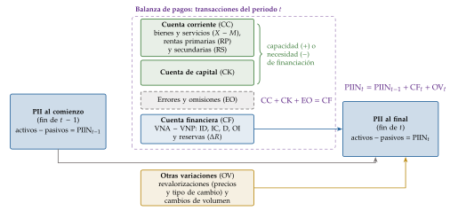
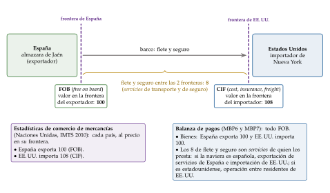
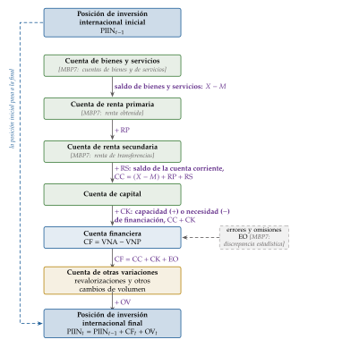
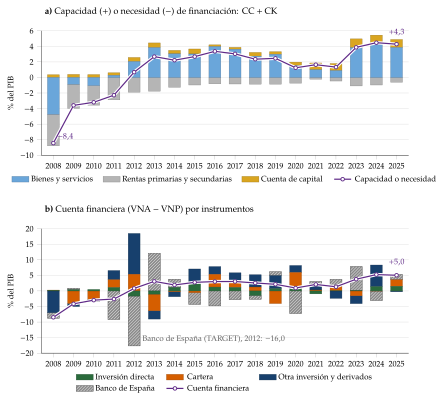
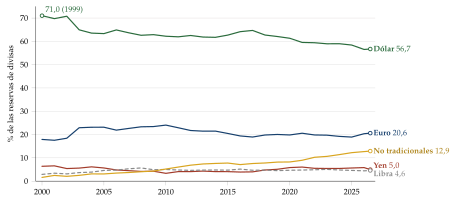
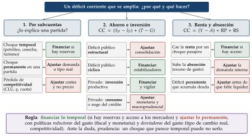
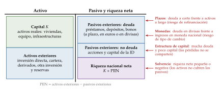
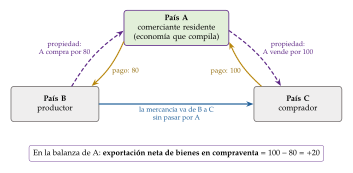
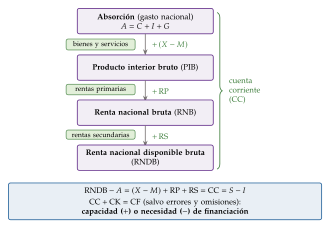
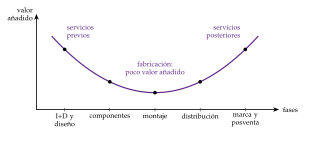

Tema 3.B.11
Balanza de pagos: concepto, medición e interpretación.
Balanza de pagos y posición de inversión internacional (MBP6): partida doble, cuenta corriente, financiera, TARGET, ahorro e inversión y sostenibilidad.
Exclusivo Material exclusivo de victorgutierrezmarcos.es y la app Oposición TCEE · DCE. Puedes usarlo libremente para tu estudio personal. No se autoriza su incorporación a otras plataformas, aplicaciones o servicios. Condiciones de uso.
Introducción
Enganche:
«No se puede estirar el brazo más que la manga», dice el refrán. En 2007 España lo estiró todo lo que pudo: gastaba frente al resto del mundo mucho más de lo que ingresaba, con un déficit por cuenta corriente del 9,4 % del PIB, y el resto del mundo le prestaba la diferencia.
La manga se acabó con la crisis. Desde 2012 la economía española presta en lugar de pedir prestado: en 2025 su capacidad de financiación fue del 4,3 % del PIB, y su posición deudora neta frente al exterior, que llegó al \(-97\) % del PIB en 2009, había bajado al \(-42{,}7\) %.
Saber quién presta a quién, cuánto, con qué instrumentos y si la deuda que queda se puede pagar es justo lo que miden la balanza de pagos y la posición de inversión internacional. Las seguiremos a través de una almazara cooperativa de Jaén que vende aceite a un importador de Nueva York.
Relevancia:
Para la política económica: el saldo exterior es el punto de partida de la supervisión del FMI, que evalúa cada año los saldos de las grandes economías en su External Sector Report [ver tema 3.B.22], y del procedimiento de desequilibrios macroeconómicos de la UE, que da la alerta si el saldo corriente medio de 3 años sale de la banda entre el \(-4\) % y el \(+6\) % del PIB o si la posición de inversión internacional neta cae por debajo del \(-35\) %.
Para la teoría: la identidad de la balanza de pagos es la base de los modelos de ajuste exterior y del enfoque intertemporal [ver tema 3.B.12], y de los de crisis de balanza de pagos [ver tema 3.B.17]. Las grandes crisis de los últimos 40 años (América Latina en los 80, Asia en 1997, la periferia del euro en 2010-2012) se anunciaban en estas cuentas: una posición deudora neta grande, sobre todo si es deuda y no acciones, es uno de los mejores predictores de una crisis exterior.
Para comparar países: todos la elaboran con el mismo manual del FMI, de modo que sus cifras se pueden sumar y comparar.
Contextualización:
La balanza de pagos (BP) y la posición de inversión internacional (PII) son las cuentas internacionales de un país: el registro de sus relaciones económicas con el resto del mundo. En España las elabora el Banco de España.
Son la parte exterior de la contabilidad nacional, que nace en los años 30 y 40 con Simon Kuznets en Estados Unidos y Richard Stone en el Reino Unido1 [ver tema 3.A.30]. Comparten con ella conceptos y principios: el Manual de Balanza de Pagos y Posición de Inversión Internacional del FMI se revisa a la vez que el Sistema de Cuentas Nacionales de Naciones Unidas.
El manual va por su séptima edición. Los datos que se publican hoy siguen la sexta (MBP6, 2009), obligatoria en la UE desde los datos de 2014; la séptima (MBP7) se publicó en marzo de 2025, en una versión previa a la edición final, junto con el SCN 2025, y en Europa se aplicará a finales de la década. Mientras tanto, el tema usa las cuentas y los nombres del MBP6 y señala lo que cambia con el MBP7.
La forma de leerlas ha cambiado con el sistema monetario internacional: con los tipos fijos de Bretton Woods, un déficit era sobre todo un problema de reservas; con la libertad de movimientos de capital, desde los 80, un déficit puede ser la decisión razonable de un país que invierte; y tras las crisis de los 90 y la de 2008 importan tanto los saldos acumulados (los stocks) como los flujos.
Problemática (preguntas clave):
¿Qué registran la balanza de pagos y la posición de inversión internacional, y con qué reglas se miden?
¿Qué nos dice cada una de sus cuentas?
Si la balanza siempre cuadra, ¿qué es un desequilibrio exterior? ¿Es malo un déficit? ¿Cuándo preocupa?
Estructura:
La exposición sigue el título, en 3 partes:
En el bloque I, el concepto y la medición: qué son las cuentas internacionales y con qué principios contables se elaboran.
En el bloque II, la estructura de la balanza y la lectura de cada cuenta, de la cuenta corriente a la posición de inversión internacional.
En el bloque III, la interpretación del saldo agregado: el saldo como brecha entre el ahorro y la inversión, su financiación (con reservas o, en la zona del euro, con los saldos TARGET), su sostenibilidad y los desequilibrios globales.
El orden va de la regla contable al diagnóstico económico: sin saber cómo se anota cada operación no se puede interpretar el saldo.
3.B.11. Balanza de pagos: concepto, medición e interpretación
Introducción2′30″
I. Concepto y medición6′30″
1. Concepto
2. Medición
II. Estructura de las cuentas internacionales y lectura de cada cuenta11′30″
1. Visión general de las cuentas
2. Cuenta corriente
3. Cuenta de capital
4. Cuenta financiera, posición de inversión internacional y rentas primarias de la inversión
5. Errores y omisiones
6. Cambios en la PII no recogidos en la cuenta financiera
7. Posición de inversión internacional
III. Interpretación del saldo agregado8′30″
1. Cuenta corriente: brecha entre ahorro e inversión
2. El papel de las reservas y el ajuste de la balanza de pagos
3. El enfoque de la hoja de balance
4. Desequilibrios globales
Conclusión1′
Reparto del cante:
introducción, 2′30″;
I, 6′30″ (I.1, 2′30″; I.2, 4′);
II, 11′30″ (II.1, 1′; II.2, 3′30″; II.3, 1′; II.4, 3′; II.5, 0′30″; II.6, 1′; II.7, 1′30″);
III, 8′30″ (entrada, 0′30″; III.1, 3′; III.2, 1′30″; III.3, 2′; III.4, 1′30″);
conclusión, 1′.
Es un tema de documento estadístico: la teoría del ajuste, de las crisis y de la sostenibilidad se cuenta en resumen y se remite a sus temas. Las tablas de España, las series de datos y los anexos A a E (rúbricas y fuentes, cuadros del MBP6, asientos y ejercicios, cuentas nacionales y sostenibilidad) son para las preguntas del tribunal.
I. Concepto y medición
Empezamos por el concepto y la medición, porque sin saber qué se anota y cómo no se puede leer ningún saldo.
Conclusión anticipada: las cuentas internacionales son 3 estados enlazados (la balanza de pagos, la posición de inversión internacional y la cuenta de otras variaciones), que se elaboran con los mismos principios que la contabilidad nacional: residencia, partida doble, devengo y precios de mercado.
I.1. Concepto
Las cuentas internacionales de una economía son 3 estados contables:
la balanza de pagos, que recoge flujos: las transacciones del periodo;
la posición de inversión internacional, que recoge saldos: los activos y pasivos frente al exterior en una fecha;
la cuenta de otras variaciones de los activos y pasivos financieros, que recoge los flujos que no son transacciones y permite pasar de la posición inicial a la final.
I.1.1. La balanza de pagos
La balanza de pagos es el registro sistemático y contable de las transacciones económicas entre residentes y no residentes de un país durante un periodo. Cada parte de la definición dice algo:
Registro sistemático: ordena las transacciones en cuentas normalizadas por el FMI (la cuenta corriente, la de capital y la financiera, con sus subcuentas), lo que permite comparar países y periodos.
Contable: sigue unos principios contables (apartado I.2.3). Por la partida doble, la balanza siempre cuadra en conjunto, aunque sus cuentas no cuadren por separado.
De transacciones económicas: una transacción es una interacción entre 2 unidades, por mutuo acuerdo o por imperativo legal, en la que se intercambia algo de valor (bienes, servicios, activos) o se transfiere sin contrapartida.
Entre residentes y no residentes: manda la residencia, no la nacionalidad ni la moneda en que se paga (apartado I.2.2).
Durante un periodo: es una variable flujo. El periodo de referencia es el año, pero se publica también por trimestres y por meses.
Equilibrio contable y desequilibrio económico: que la balanza cuadre es una propiedad contable, no una buena noticia. Cuando se habla de un desequilibrio exterior se habla de un saldo parcial (en general, la cuenta corriente o la capacidad o necesidad de financiación) que no se puede mantener indefinidamente (bloque III).
I.1.2. La posición de inversión internacional
La posición de inversión internacional es el balance financiero del país con el exterior en una fecha: cuánto valen, y en qué instrumentos están, los derechos de los residentes sobre los no residentes (activos exteriores) y las obligaciones de los residentes con ellos (pasivos exteriores). La diferencia es la posición de inversión internacional neta (PIIN), \[\mathrm{PIIN}\equiv\text{activos exteriores}-\text{pasivos exteriores},\] positiva si el país es acreedor neto y negativa si es deudor neto. Es la parte exterior del balance de la nación: sumada al capital, la vivienda y la tierra del país, da su riqueza neta (apartado III.3).
I.1.3. La cuenta de otras variaciones
La cuenta de otras variaciones de los activos y pasivos financieros recoge lo que cambia la posición sin que haya transacción: las revalorizaciones por precios y por tipo de cambio y los otros cambios de volumen (apartado II.6). Queda fuera de la balanza de pagos, pero sin ella la posición final no se explica.
Las 3 cuentas juntas (gráfico 1): la posición al principio del periodo, más las transacciones financieras de la balanza de pagos, más las otras variaciones, da la posición al final. Es el mapa de todo el tema: el bloque II recorre sus cajas una a una y el bloque III interpreta lo que dicen.

Fuente: elaboración propia a partir de Fondo Monetario Internacional (2009, cap. 2) y Banco de España (2025). Arriba, la parte no financiera de la balanza (capacidad o necesidad de financiación); en el centro, la cuenta financiera, que la refleja salvo los errores y omisiones; abajo, las otras variaciones, que no son transacciones. La posición final suma a la inicial la cuenta financiera y las otras variaciones.
Volvamos a la almazara de Jaén:
si vende 1.000 cajas de aceite al importador de Nueva York, hay una transacción entre un residente y un no residente, y va a la balanza de pagos de España;
si las vende a un distribuidor de Sevilla, la transacción es entre residentes y no aparece;
si cobra en dólares y los deja en una cuenta de un banco de Nueva York, ese depósito es un activo exterior y forma parte de la posición de inversión internacional de España; si después el dólar se deprecia, el depósito vale menos euros sin que la almazara haga nada: no es una transacción, sino una de las otras variaciones.
I.2. Medición
Una vez definido qué se registra, pasamos a cómo se mide.
El FMI fija la metodología en su Manual de Balanza de Pagos. El primero es de 1948 y el quinto (MBP5), de 1993; la sexta edición (MBP6, 2009) es la que siguen hoy los datos publicados, y la séptima (MBP7) se publicó en marzo de 2025. Cada revisión acerca la balanza al Sistema de Cuentas Nacionales y da más peso a los stocks.
Del MBP5 al MBP6 y del MBP6 al MBP7
El MBP6 (2009) se alineó con el SCN 2008 y dio a la posición de inversión internacional el mismo rango que a la balanza: está por primera vez en el título del manual. Cambió el signo de la cuenta financiera (ahora, variación neta de activos menos variación neta de pasivos), llamó rentas primarias y secundarias a las antiguas rentas y transferencias corrientes, pasó a servicios la transformación de bienes que no cambian de propietario, llevó la compraventa (merchanting) de los servicios a los bienes y trató los resultados de la investigación y el desarrollo como activos producidos, de modo que su compraventa sale de la cuenta de capital.
El MBP7, el Integrated Balance of Payments and International Investment Position Manual, se publicó el 20 de marzo de 2025 en una versión previa a la edición final (white cover), junto con el SCN 2025, y aún no tiene traducción oficial al español. En Europa, el Sistema Europeo de Bancos Centrales coordina su aplicación con la del SCN 2025 (y el futuro SEC que sustituirá al SEC 2010) para finales de la década; hasta entonces los datos siguen el MBP6. El marco y las grandes definiciones no cambian, pero sí nombres y piezas que importan para el análisis2:
Nombres: el título del manual pasa a ser «integrado» porque la posición, sus transacciones y sus otras variaciones forman un solo estado; la cuenta de bienes y servicios se divide en una cuenta de bienes y una de servicios; la renta primaria pasa a llamarse renta obtenida (earned income), y la secundaria, renta de transferencias (transfer income); los créditos y débitos pasan a ser créditos/ingresos y débitos/gastos; los errores y omisiones netos, discrepancia estadística, y la remuneración de asalariados, remuneración de empleados. La cuenta corriente, la de capital, la financiera y la posición conservan su nombre.
Otras variaciones: pasan a los componentes normalizados, separadas en variaciones del tipo de cambio, otras variaciones de precio y otros cambios de volumen.
Activos digitales: los criptoactivos sin pasivo de contrapartida pensados como medio de cambio, como el bitcóin, no son activos financieros: se registran como activos no financieros no producidos, en una partida propia de la cuenta de capital, y no pueden formar parte de las reservas; los que tienen un pasivo de contrapartida (las monedas estables o stablecoins respaldadas, los tokens de deuda) son activos financieros. Los permisos de emisión pasan a ser activos financieros.
Reservas: define las reservas internacionales netas: los activos de reserva menos las salidas netas de divisas ya comprometidas para los 12 meses siguientes.
Servicios: 17 componentes en lugar de 12 (se separan las telecomunicaciones de la informática y los otros servicios empresariales se dividen en 5).
Sectores e inversión directa: más detalle por sectores (las sociedades no financieras y los hogares, por separado), una definición común de las entidades con fines especiales y la inversión directa presentada por instrumentos y sectores.
Valoración: se mantiene el criterio FOB, aunque el manual anuncia que el valor de transacción (el de la factura) será la norma en la próxima edición.
Capítulos nuevos, comunes con el SCN 2025: globalización, digitalización, finanzas islámicas, economía informal y comunicación.
I.2.1. Registro de las operaciones: flujos y posiciones
El MBP6 distingue entre flujos, que ocurren durante el periodo, y posiciones, que son niveles en una fecha.
Los flujos recogen cómo se crea, se transforma, se intercambia, se transfiere o desaparece valor económico durante el periodo. Son de 2 tipos:
las transacciones, que pueden ser intercambios (algo de valor a cambio de algo de valor: la almazara entrega aceite y recibe dólares) o transferencias (algo de valor a cambio de nada: una ayuda de la UE o una remesa de un emigrante);
los otros flujos, que alteran la cantidad, el precio o la categoría de un activo o de un pasivo sin que medie una transacción: una revalorización, la cancelación por el acreedor de una deuda que da por incobrable, una catástrofe que destruye un activo, una expropiación sin indemnización.
Las posiciones son los saldos de activos y pasivos frente al exterior en una fecha: se recogen en la posición de inversión internacional, al principio y al final del periodo. Entre las 2 fechas las unen los flujos: lo que cambia la posición es o una transacción u otro flujo.
La contabilidad nacional distingue lo mismo en la cuenta del resto del mundo (tabla 1) [ver tema 3.A.30].
| Balanza de pagos (MBP6) | Cuentas nacionales (SEC 2010) | |
|---|---|---|
| Flujos y posiciones | Balanza de pagos (transacciones), cuenta de otras variaciones de los activos y pasivos financieros y posición de inversión internacional | Las mismas piezas en la cuenta del resto del mundo: cuentas corrientes, de capital y financiera, cuenta de otras variaciones de los activos y balance |
Fuente: elaboración propia a partir de Fondo Monetario Internacional (2009, caps. 2-4 y apéndice 7) y del SEC 2010 (Parlamento Europeo y Consejo de la Unión Europea, 2013).
I.2.2. ¿Quién realiza las operaciones registradas en la balanza de pagos?
Principio de residencia
Una unidad es residente de un país si su centro de interés económico predominante se encuentra en el territorio económico de ese país: allí vive o produce, y desde allí opera de forma significativa, indefinidamente o durante un tiempo largo. En la práctica, la referencia es un año o más, sin que sea una regla rígida.
Cómo se aplica:
los hogares son residentes donde tienen su vivienda principal; los estudiantes y los pacientes que se desplazan para formarse o curarse siguen siendo residentes de su país de origen, aunque estén fuera más de un año, y los turistas también;
las filiales son residentes donde operan. Las sucursales también lo son cuando tienen una producción significativa en ese territorio durante un año o más, y entonces sus operaciones con la matriz son transacciones exteriores. Las entidades con poca o ninguna presencia física (las sociedades instrumentales o entidades con fines especiales, en inglés special purpose entities, SPE) son residentes donde se constituyen;
las Administraciones Públicas son residentes con todos sus organismos, incluidas las embajadas, los consulados y las bases militares en el exterior, que son enclaves de su territorio económico;
los organismos internacionales no son residentes de ninguna economía, tampoco de la que los acoge: sus operaciones con los residentes de esta son transacciones exteriores. Para España, el BCE es resto del mundo.
Siguiendo con nuestra almazara: si abre una filial comercial en Nueva Jersey para distribuir su aceite, la filial es residente de Estados Unidos aunque sus dueños sean de Jaén. Lo que la almazara le venda a su filial es una exportación española, y el capital que pone en ella, una inversión directa en el exterior.
Sectores institucionales
El MBP6 clasifica a los residentes en 4 sectores, pensados para ver quién se relaciona con el exterior:
el banco central (en la zona del euro, el banco central nacional: el Banco de España);
las sociedades de depósito, salvo el banco central (en la terminología del Banco de España, las otras instituciones financieras monetarias: sobre todo, las entidades de crédito);
las Administraciones Públicas;
los otros sectores residentes: las otras instituciones financieras (seguros, fondos de pensiones y de inversión), las sociedades no financieras, los hogares y las instituciones sin fines de lucro al servicio de los hogares.
La contabilidad nacional aplica la misma residencia, pero agrupa primero a todas las instituciones financieras y después distingue entre ellas al banco central (tabla 2) [ver tema 3.A.30]: su clasificación mira cómo se relacionan los sectores dentro de la economía; la de la balanza, quién se relaciona con el resto del mundo. Con el MBP7 las 2 clasificaciones se acercan: la balanza separa también las sociedades no financieras y los hogares.
| Balanza de pagos (MBP6) | Cuentas nacionales (SEC 2010) | |
|---|---|---|
| Residencia | Centro de interés económico predominante (referencia de un año) | Igual |
| Sectores | 4: banco central; sociedades de depósito, salvo el banco central; Administraciones Públicas; otros sectores | 5: sociedades no financieras (S.11); instituciones financieras (S.12, con el banco central dentro, S.121); Administraciones Públicas (S.13); hogares (S.14); instituciones sin fines de lucro (S.15) |
Fuente: elaboración propia a partir de Fondo Monetario Internacional (2009, caps. 2-4 y apéndice 7) y del SEC 2010 (Parlamento Europeo y Consejo de la Unión Europea, 2013).
I.2.3. Principios contables
Las operaciones se anotan con 3 principios, que son los de la contabilidad nacional:
la partida doble (y, en el sistema mundial, la cuádruple), que dice cuántos asientos hay;
el devengo, que dice cuándo se anotan;
la valoración a precios de mercado y en moneda nacional, que dice por cuánto.
Partida doble y partida cuádruple
Partida doble (vertical): cada transacción se anota 2 veces, por el mismo importe, una como crédito y otra como débito, de modo que la suma de los créditos iguala a la de los débitos y la balanza cuadra en conjunto. «Toda moneda tiene dos caras»: a cada bien o servicio que sale le corresponde un activo que entra o un pasivo que se contrae.
Créditos: las exportaciones de bienes y servicios, las rentas primarias y secundarias a cobrar, las disminuciones de activos financieros y los aumentos de pasivos.
Débitos: las importaciones de bienes y servicios, las rentas a pagar, los aumentos de activos financieros y las disminuciones de pasivos.
Cómo se presenta: en las cuentas corriente y de capital se anotan créditos y débitos brutos. En la cuenta financiera, en cambio, se anotan cifras netas por instrumento: la variación neta de activos (VNA) y la variación neta de pasivos (VNP), las 2 con signo positivo cuando aumentan.
Partida doble horizontal: las 2 partes de una transacción la registran por el mismo importe y en el mismo momento; lo que una paga, la otra lo cobra. Por eso, en el mundo, los dividendos pagados tendrían que igualar a los cobrados, y las exportaciones a las importaciones.
Partida cuádruple: aplicar a la vez las 2 reglas hace que cada transacción genere 2 asientos en las cuentas de cada una de las 2 partes, 4 en el sistema mundial. En la balanza de un país solo se ven los 2 del residente; los otros 2 están en la balanza del país de la contraparte. Es la base de la coherencia entre las cuentas nacionales y las internacionales y de la simetría de las estadísticas bilaterales, que en la práctica no se cumple del todo: sumadas las balanzas de todos los países, el mundo no cuadra consigo mismo (apartado III.4).
Volvamos a la almazara para ver la partida doble con los signos del MBP6 (tabla 3).
| Operación | Cuenta corriente | Cuenta financiera |
|---|---|---|
| 1. Exporta aceite por 100 y cobra en su cuenta de un banco de Nueva York | Bienes: crédito, 100 | Otra inversión (depósitos): VNA \(+100\) |
| 2. Vende por 50 unas acciones de una empresa francesa y cobra en esa cuenta | — | Cartera: VNA \(-50\); otra inversión (depósitos): VNA \(+50\) |
| 3. Un banco italiano le presta 70 y con ellos compra una envasadora en Italia | Bienes: débito, 70 | Otra inversión (préstamos): VNP \(+70\) |
| Saldos | \(\mathrm{CC}=100-70=30\) | \(\mathrm{CF}=\mathrm{VNA}-\mathrm{VNP}=100-70=30\) |
Fuente: elaboración propia, con los 3 tipos de operación del recuadro 2.1 de Fondo Monetario Internacional (2009).
La operación 1 es una exportación: crédito en bienes y débito en la cuenta financiera (sube un activo).
La operación 2 solo cambia la composición de los activos (sale cartera, entra un depósito): no altera ningún saldo.
La operación 3 es una importación financiada con deuda: débito en bienes y crédito en la cuenta financiera (sube un pasivo).
En el conjunto, el saldo corriente coincide con el de la cuenta financiera: es la identidad de la balanza de pagos (apartado II.1).
Momento de registro: el devengo
Las transacciones se anotan por el principio de devengo: cuando se crea, transforma, intercambia, transfiere o extingue el valor económico, y no cuando se cobra o se paga:
los bienes y los activos, cuando cambia la propiedad económica;
los servicios, cuando se prestan;
las rentas, cuando nace el derecho a cobrar o la obligación de pagar: los intereses se devengan día a día, aunque se paguen una vez al año.
Si el pago llega después, la diferencia es un crédito comercial en la cuenta financiera.
Siguiendo con nuestra almazara: si exporta hoy con pago a 60 días, hoy anota la exportación y, como contrapartida, un activo frente al importador (un crédito comercial); dentro de 60 días, cuando cobre, ese crédito se cancela y aumenta su depósito. La exportación se anota una sola vez, hoy.
Es el mismo criterio que el de la contabilidad nacional y el de las estadísticas fiscales y monetarias, lo que permite integrarlas. Cuando el devengo no se puede aplicar o es muy costoso, se recurre a aproximaciones por caja, pero es la excepción.
Valoración
A precios de mercado: las transacciones, al precio de la fecha en que se hacen; las posiciones, al de la fecha a la que se refieren. Para lo que no se negocia en un mercado se usan aproximaciones: los préstamos y los depósitos, por su valor nominal; las acciones no cotizadas, por sus fondos propios.
En moneda nacional: los flujos en divisas se convierten al tipo de cambio del momento de la transacción, y los saldos, al del día al que se refiere la posición. Por eso el tipo de cambio mueve la posición sin que haya transacciones (apartado II.6).
Las mercancías, FOB (free on board, franco a bordo): en la frontera del país exportador, sin el flete ni el seguro posteriores, tanto las exportaciones como las importaciones. El transporte y el seguro son servicios y van a la balanza de quien los presta.
Las estadísticas de comercio de mercancías siguen otra recomendación, la de Naciones Unidas: exportaciones FOB e importaciones CIF (cost, insurance and freight), con el flete y el seguro hasta la frontera del importador. Las 2 miden al precio en la frontera del país que declara: la exportación sale por su frontera (FOB) y la importación entra por la suya (CIF). Por eso las importaciones de Aduanas son mayores que las de la balanza de pagos, y el Banco de España las ajusta.
La balanza lo mide todo FOB porque el flete y el seguro que hay entre las 2 fronteras son servicios: si los presta un residente, son una exportación de servicios (o una operación entre residentes); si los presta un no residente, una importación de servicios (gráfico 2). Contarlos dentro del valor del bien los anotaría 2 veces o en la cuenta equivocada.

Fuente: elaboración propia a partir de Fondo Monetario Internacional (2025b, §§ 10.24–10.29) y de Naciones Unidas (2011). La almazara de Jaén exporta aceite a Nueva York por 100 en el puerto de Algeciras; el flete y el seguro hasta Nueva York cuestan 8.
Para Estados Unidos, la estadística de comercio anota una importación de 108 (CIF); su balanza de pagos, 100 de bienes y 8 de servicios importados si la naviera es española, o 100 de bienes y una operación entre residentes si es estadounidense. Para España, Aduanas y la balanza anotan la misma exportación de bienes: 100 (FOB).
Las cuentas internacionales frente a las nacionales
Los principios son los mismos que los de la contabilidad nacional (tabla 4). La diferencia más importante para leer los datos es de presentación: la balanza de pagos se escribe desde el país, y la cuenta del resto del mundo de la contabilidad nacional, desde fuera, con el signo cambiado (la comparación completa, en la tabla 13 del anexo D) [ver tema 3.A.30].
| Balanza de pagos (MBP6) | Cuentas nacionales (SEC 2010) | |
|---|---|---|
| Registro | Partida doble en la balanza de un país; cuádruple en el sistema mundial | Partida cuádruple |
| Momento | Devengo: cambio de la propiedad económica, prestación del servicio, nacimiento del derecho de cobro | Igual |
| Valoración | Precios de mercado; bienes FOB en las exportaciones y en las importaciones | Igual |
Fuente: elaboración propia a partir de Fondo Monetario Internacional (2009, caps. 2-4 y apéndice 7) y del SEC 2010 (Parlamento Europeo y Consejo de la Unión Europea, 2013).
I.2.4. Fuentes de información
En España, el Banco de España combina registros administrativos y encuestas:
las declaraciones de los proveedores de servicios de pago, que comunican los cobros y pagos de sus clientes con el exterior de más de 50.000 euros: es la fuente común a la cuenta corriente y a la financiera;
las estadísticas de comercio de Aduanas: el documento único administrativo (DUA) para el comercio con países de fuera de la UE e Intrastat para el comercio dentro de ella, ajustadas al criterio de la balanza (importaciones FOB, merchanting, bienes enviados a transformar);
las encuestas del INE: la de gasto turístico (EGATUR, con FRONTUR) y la de comercio internacional de servicios;
las declaraciones directas de los residentes al Banco de España por sus operaciones y saldos con el exterior: cada mes si superan 300 millones de euros, cada trimestre o cada año si son menores, y por debajo de un millón solo si el Banco las pide;
el Registro de Inversiones Exteriores de la Secretaría de Estado de Comercio, para la inversión directa, y el propio balance del Banco de España, para sus operaciones.
Marco jurídico: en la UE la balanza de pagos es obligatoria. El Reglamento (CE) 184/2005, adaptado al MBP6 por el Reglamento (UE) 555/2012, se aplica desde los datos de 2014, y el BCE fija lo que le envían los bancos centrales del Eurosistema.
El detalle de las fuentes, los ajustes y el merchanting está en el anexo A.
Recapitulando: sabemos qué se anota (las transacciones entre residentes y no residentes, y lo que cambia la posición sin ellas) y cómo (partida doble, devengo, precios de mercado). Con estas reglas, pasamos a la estructura de la balanza y a lo que dice cada una de sus cuentas.
II. Estructura de las cuentas internacionales y lectura de cada cuenta
Una vez visto cómo se mide, pasamos a la estructura de la balanza y a lo que dice cada una de sus cuentas.
Conclusión anticipada: la cuenta corriente y la de capital dicen cuánto presta o pide prestado el país; la financiera, con qué instrumentos y qué sectores; y la posición de inversión internacional, cuánto ha acumulado y con qué riesgo.
II.1. Visión general de las cuentas
La balanza como sucesión de cuentas (gráfico 3): como en la contabilidad nacional, cada cuenta deja un saldo que pasa a la siguiente. Al saldo de bienes y servicios se suman las rentas primarias y después las secundarias, y sale el saldo de la cuenta corriente; con la cuenta de capital sale la capacidad o necesidad de financiación, que la cuenta financiera refleja, salvo los errores y omisiones. Y la cuenta financiera, con las otras variaciones, lleva de la posición de inversión internacional inicial a la final.

Fuente: elaboración propia a partir de Fondo Monetario Internacional (2009, cap. 2) y Fondo Monetario Internacional (2025b, cap. 2). A la derecha de cada flecha, el saldo que pasa a la cuenta siguiente; entre corchetes, el nombre que le da el MBP7.
La balanza de pagos tiene 3 grandes cuentas, que son las cajas centrales del panorama (gráfico 1):
la cuenta corriente (CC): bienes y servicios, rentas primarias y rentas secundarias;
la cuenta de capital (CK): transferencias de capital y compraventa de activos no financieros no producidos;
la cuenta financiera (CF): la variación neta de activos menos la variación neta de pasivos financieros frente al exterior.
Las 2 primeras son la parte no financiera y se anotan en créditos y débitos; la tercera es la parte financiera y se anota en VNA y VNP. Todo se ve desde el residente: un crédito es algo que el país cobra o un pasivo que contrae.
La identidad. Por la partida doble, lo que el país presta o pide prestado con sus operaciones no financieras aparece, con el mismo signo, en la cuenta financiera:
\[\underbrace{\overbrace{(X-M)+\mathrm{RP}+\mathrm{RS}}^{\mathrm{CC}\text{: cuenta corriente}}+\overbrace{\mathrm{CK}}^{\text{c. de capital}}}_{\text{capacidad }(+)\text{ o necesidad }(-)\text{ de financiación}}+\overbrace{\mathrm{EO}}^{\text{errores y omisiones}}=\overbrace{\mathrm{CF}}^{\text{c. financiera}}=\underbrace{\mathrm{ID}+\mathrm{IC}+\mathrm{D}+\mathrm{OI}+\Delta R}_{\text{por instrumentos}}\tag{1}\]
con \(X-M\) el saldo de bienes y servicios, RP y RS las rentas primarias y secundarias netas y, en la cuenta financiera, la inversión directa (ID), la de cartera (IC), los derivados (D), la otra inversión (OI) y la variación de las reservas (\(\Delta R\)).
En palabras: \(\mathrm{CC}+\mathrm{CK}\) es la capacidad de financiación de la nación si es positiva y su necesidad de financiación si es negativa. La cuenta financiera dice cómo se materializa: un país con capacidad acumula activos frente al exterior o cancela pasivos (sale capital en términos netos); uno con necesidad se endeuda o vende activos (entra capital).
Con los signos del MBP6 (\(\mathrm{CF}=\mathrm{VNA}-\mathrm{VNP}\)), la capacidad o necesidad de financiación y la cuenta financiera coinciden en valor y en signo, salvo los errores y omisiones: una capacidad de financiación (\(\mathrm{CC}+\mathrm{CK}>0\)) es una salida neta de capitales (\(\mathrm{CF}>0\)). Con el quinto manual, y en muchos manuales antiguos, la cuenta financiera tenía el signo contrario (una entrada de capital era positiva) y la identidad se escribía \(\mathrm{CC}+\mathrm{CK}+\mathrm{CF}'+\mathrm{EO}=0\). Conviene decir en el examen qué convención se usa.
En España la capacidad de financiación fue del 4,3 % del PIB en 2025: el superávit de servicios compensa con creces el déficit de bienes, y la cuenta de capital suma 1 punto por los fondos europeos (gráfico 4). En los 12 meses hasta agosto de 2026 bajó al 3,7 %, por un menor superávit corriente.

Fuente: elaboración propia con datos del Banco de España (Banco de España, 2026a) y de Eurostat para el PIB (Eurostat, 2026a). Arriba, la capacidad o necesidad de financiación por componentes; abajo, cómo se materializa en la cuenta financiera, con el Banco de España aparte. El giro de 2012 es el del enganche.
II.2. Cuenta corriente
La cuenta corriente recoge las transacciones de bienes, servicios y rentas con el exterior: \(\mathrm{CC}=(X-M)+\mathrm{RP}+\mathrm{RS}\). El detalle de sus rúbricas está en el anexo A.
Bienes y servicios
Bienes: las mercancías cuya propiedad económica pasa de un residente a un no residente, crucen o no la frontera: mercancías generales, compraventa (por el margen) y oro no monetario.
Servicios: 12 componentes normalizados, entre ellos el transporte, los viajes (el turismo), los servicios financieros, los cargos por el uso de la propiedad intelectual y los otros servicios empresariales.
Volvamos a la almazara: el aceite que vende a Nueva York es una exportación de bienes; el flete del barco, si lo presta una naviera española, es una exportación de servicios; los cánones que pague por la licencia de una marca extranjera, una importación de servicios.
Cómo se lee el saldo de bienes y servicios
Peso de cada componente: los servicios son algo más de la cuarta parte del comercio mundial medido en valor bruto (9,6 de los 34,7 billones de dólares exportados en 2025). Medidos en valor añadido rondan la mitad, porque van incorporados en los bienes (diseño, I+D, logística, marketing): es la servicificación (servicification) de las manufacturas.3
Estructura: un país desarrollado exporta más servicios y bienes de contenido tecnológico alto, tiene más comercio intraindustrial y sus exportaciones dependen menos del precio. En las cadenas globales de valor, las fases de más valor añadido están al principio (I+D, diseño) y al final (marca, distribución, posventa), y la fabricación, en medio: es la curva de la sonrisa (smile curve) [ver tema 3.B.18].4
De qué depende el saldo: negativamente de la renta nacional (más importaciones) y positivamente de la de los socios (más exportaciones) y de la competitividad, que se mide de 3 formas:
Competitividad-precio: el principal indicador es el tipo de cambio efectivo real (TCER), la media geométrica, ponderada por el comercio, de los tipos reales bilaterales \(q=EP^*/P\), con \(E\) el tipo de cambio nominal directo: \[q^{ef}=\prod_i\left(\frac{E_iP_i^*}{P}\right)^{\omega_i},\qquad \sum_i\omega_i=1 .\] Una subida de \(q^{ef}\) es una depreciación real, una ganancia de competitividad-precio [ver tema 3.B.13]. Según el índice que se use, mide las tensiones generales (precios de consumo), las del mercado de trabajo (costes laborales unitarios, CLU) o las del sector exportador (precios de exportación). Cuidado con el signo: el BCE y el Banco de España publican los índices al revés (una subida es una apreciación); hay que decirlo al pasar a los datos.
Competitividad no precio: capital físico, humano y tecnológico, calidad, marca, instituciones y clima de negocios.5
Resultados: la cuota de mercado de las exportaciones, que resume las 2 anteriores; la tasa de cobertura, \(X/M\); la propensión exportadora, \(X/\mathrm{PIB}\), y el contenido importado de las exportaciones, que mide la participación en las cadenas de valor.
En una unión monetaria, el tipo nominal frente a los socios está fijo. Como en tasas \(\gamma_q\simeq\gamma_E+\pi^*-\pi\), entre socios queda \[\gamma_q\simeq\pi^*-\pi :\] una inflación mayor que la de los socios es una apreciación real y resta competitividad año tras año [ver tema 3.A.41]. Si los CLU crecen más que los de los socios (\(\gamma_{\mathrm{CLU}}=\gamma_W-\gamma_{\mathrm{PAT}}\)), la pérdida es de competitividad en costes.
Sin tipo de cambio propio, la competitividad perdida solo se recupera con una devaluación interna: precios y salarios que crecen menos que los de los socios, o más productividad. Es más lenta y más costosa en empleo que una devaluación nominal [ver tema 3.B.16]. Fue el ajuste de los países del sur de la zona del euro tras la crisis de la deuda [ver tema 4.A.22].
No toda inflación diferencial es pérdida de competitividad: en un país que converge, la productividad de los bienes comerciables crece deprisa, suben los salarios y, con ellos, los precios de los servicios no comerciables (efecto Balassa-Samuelson). Por eso el diagnóstico se hace también con los CLU de las manufacturas o con los precios de exportación.
El procedimiento de desequilibrios de la UE vigila por eso, además del saldo corriente, el tipo de cambio efectivo real y los CLU nominales.
España: en 2025, un déficit de bienes del 3,0 % del PIB (sobre todo energético) y un superávit de servicios del 6,8 %, del que el turismo aporta 4,3 puntos (tabla 7).
Rentas primarias
Son lo que se paga por el uso temporal de los factores (el MBP7 las llama renta obtenida, earned income): las rentas del trabajo (trabajadores fronterizos, de temporada y de menos de un año), las rentas de la inversión (intereses, dividendos y beneficios reinvertidos, con las categorías de la cuenta financiera; suelen ser el grueso) y la otra renta primaria (impuestos sobre la producción y las importaciones y subvenciones entre residentes y no residentes, y rentas de los recursos naturales).6
Cómo se leen: explican la diferencia entre el PIB y la renta nacional bruta (RNB). Un país deudor neto, o con mucha inversión extranjera directa que reparte beneficios fuera, tiene una RNB menor que su PIB; Irlanda, sede de muchas multinacionales, es el caso extremo. Y cierran el círculo con la posición: cuanto más deudor es un país, más rentas paga, y peor es su cuenta corriente futura (apartado II.4).
Rentas secundarias
Son las transferencias corrientes (el MBP7 las llama renta de transferencias, transfer income): lo que se da sin contrapartida y aumenta la renta disponible del que lo recibe. Las principales son las remesas de los emigrantes, la cooperación internacional corriente, las aportaciones a la UE por los recursos IVA y RNB, los impuestos sobre la renta y las prestaciones sociales entre residentes y no residentes, y las primas netas e indemnizaciones de los seguros no vida.
Los fondos europeos Next Generation EU se anotan según su destino: los que financian gasto corriente, en la renta secundaria; los de inversión, en la cuenta de capital; los préstamos del Mecanismo de Recuperación son otra inversión de las Administraciones Públicas, y sus intereses, renta primaria.
II.3. Cuenta de capital
La cuenta de capital registra 2 cosas:
las transferencias de capital: las que traspasan la propiedad de un activo fijo, obligan a comprarlo (una ayuda condicionada a invertir) o condonan una deuda por acuerdo. En España, sobre todo, las ayudas europeas a la inversión (FEDER, Fondo de Cohesión y la parte de inversión del Mecanismo de Recuperación);
la compraventa de activos no financieros no producidos: recursos naturales (tierra, derechos de pesca, espectro radioeléctrico), contratos, arrendamientos y licencias, y activos de comercialización (marcas, logotipos, dominios).7
Lo que no va aquí: las patentes y los derechos de autor son, desde el SCN 2008, activos producidos (resultado de la I+D o de la creación): su compraventa es un servicio. La cancelación por el acreedor de una deuda que da por incobrable no es una condonación pactada: es otro cambio de volumen (apartado II.6). Y las transferencias que financian gasto corriente van a la renta secundaria.
Por qué se suma a la corriente: \(\mathrm{CC}+\mathrm{CK}\) es la capacidad o necesidad de financiación, el saldo que coincide con la cuenta financiera en la identidad (1). Es pequeña en los países avanzados, pero no en España desde 2021: en 2025 sumó el 1,0 % del PIB, por los fondos europeos.
Siguiendo con nuestra almazara: si recibe una ayuda europea para comprar la envasadora italiana, la ayuda es una transferencia de capital (crédito en la cuenta de capital); si con ella paga la máquina, la importación es un débito en bienes.
Cuenta de capital no es «balanza de capital». En las balanzas anteriores al MBP5, y en muchos manuales de macroeconomía, la «balanza de capital» era lo que hoy es la cuenta financiera: por eso se lee que «el déficit corriente se financia con la balanza de capital». Con el MBP6 la cuenta de capital es otra cosa (transferencias de capital y activos no producidos); el nombre se mantiene para que coincida con la cuenta de capital del SCN.
II.4. Cuenta financiera, posición de inversión internacional y rentas primarias de la inversión
El título junta 3 caras de lo mismo:
la cuenta financiera: las transacciones del periodo con activos y pasivos financieros (flujo);
la posición de inversión internacional: los activos y pasivos al final del periodo (saldo);
las rentas de la inversión, en la renta primaria: lo que esos activos y pasivos rinden en el periodo.
Están encadenadas: más entradas netas de capital empeoran la PIIN y, después, aumentan los pagos de rentas, que empeoran la cuenta corriente.
En la cuenta financiera se netean los asientos de cada instrumento (compras menos ventas de un activo), pero no los activos con los pasivos. Su clasificación principal es funcional.
Excepto el banco central
Inversión directa: la que da a un residente el control o una influencia significativa en la gestión de una empresa de otra economía; por convenio, el 10 % o más de los votos. Incluye las participaciones, los beneficios reinvertidos (que se anotan a la vez como renta y como reinversión) y la deuda entre empresas del grupo.8 Es la más estable y suele traer tecnología [ver tema 3.B.18][ver tema 4.A.23].
Inversión de cartera: acciones (por debajo del 10 %), participaciones en fondos y valores de deuda negociables; busca rentabilidad sin control y es más volátil [ver tema 3.B.18].
Derivados financieros (y opciones sobre acciones de los empleados): pueden pasar de activo a pasivo según el subyacente, y la balanza suele dar solo el neto [ver tema 3.B.25].
Otra inversión: la categoría residual: préstamos y depósitos, créditos comerciales, cesiones temporales, billetes y, en la zona del euro, la posición del banco central nacional frente al Eurosistema.
La almazara otra vez: la filial de Nueva Jersey es inversión directa; las acciones francesas que vendió, inversión de cartera; el depósito en Nueva York, el crédito comercial al importador y el préstamo del banco italiano, otra inversión.
Del banco central
Las reservas internacionales son los activos exteriores que el banco central controla y puede usar de inmediato para financiar desequilibrios de la balanza de pagos, intervenir en el mercado de divisas o sostener la confianza en la moneda: oro monetario, derechos especiales de giro (DEG), la posición de reserva en el FMI y divisas (depósitos y valores, sobre todo deuda pública de Estados Unidos, la zona del euro o Japón). En la balanza se anota su variación, \(\Delta R\), positiva si aumentan.
Reservas y dinero: si el banco central compra divisas, paga con moneda nacional y aumenta la base monetaria. Para que no aumente, esteriliza la compra: vende títulos en moneda nacional (o emite los suyos) y retira la liquidez que había creado [ver tema 3.B.15].
Por qué se acumulan: por precaución, como seguro frente a una parada súbita (sudden stop) de las entradas de capital (los emergentes tras la crisis asiática de 1997); para frenar la apreciación de la moneda (China en los 2000), casi siempre esterilizando, y para ahorrar los ingresos de las materias primas (a menudo en fondos soberanos). Del otro lado, las reservas son pasivos de los países que emiten las monedas de reserva: para que el mundo acumule dólares, Estados Unidos tiene que proporcionarlos con déficits exteriores, lo que a la larga erosiona la confianza en el dólar: es el dilema de Triffin.
Datos: las reservas mundiales de divisas suman 13,2 billones de dólares (junio de 2026). China tiene ella sola una cuarta parte; le siguen, con el oro incluido, Japón y Suiza. El dólar sigue siendo la moneda dominante, pero pierde peso: del 71 % de las reservas de divisas en 1999 al 56,7 % en junio de 2026, con el euro en el 20,6 %, el yen en el 5 % y la libra en el 4,6 % (gráfico 5).

Fuente: elaboración propia con datos del FMI, COFER (Fondo Monetario Internacional, 2026a). Las monedas «no tradicionales» son los dólares canadiense y australiano, el renminbi y las demás.
En la zona del euro la balanza de un país tiene 3 partidas del banco central: las reservas propiamente dichas (en monedas de fuera del euro y oro), los activos netos frente al Eurosistema y otros activos y pasivos exteriores. Antes del euro, las reservas eran la partida que cuadraba la balanza; ahora ese papel lo hace la posición frente al Eurosistema. Por eso la cuenta financiera se escribe en 2 partes: \[\mathrm{CF}=\mathrm{CF}^{\text{exc. BdE}}+\mathrm{CF}^{\text{BdE}},\qquad \mathrm{CF}^{\text{BdE}}=\Delta R+\Delta\text{TARGET}+\text{otros activos netos} .\] Fuera de una unión monetaria, \(\mathrm{CF}^{\text{BdE}}\) se reduce casi a \(\Delta R\).
De dónde sale el saldo TARGET. Los pagos entre bancos de distintos países del euro se liquidan en T2, el sistema de pagos del Eurosistema, que sustituyó a TARGET2 el 20 de marzo de 2023; el saldo conserva el nombre de saldo TARGET. Si un importador francés paga aceite a nuestra almazara, el banco francés pierde reservas en el Banco de Francia, el español las gana en el Banco de España, y los 2 bancos centrales lo compensan frente al BCE: sube el activo neto del Banco de España frente al Eurosistema y baja el del Banco de Francia. Los saldos de todos los bancos centrales suman cero.
Qué indica: la parte de la capacidad o necesidad de financiación que no cubren los flujos privados, igual que las reservas con tipo fijo (apartado III.2). Un saldo deudor que crece puede reflejar una parada súbita de la financiación privada (la periferia en 2011-2012, que Sinn y Wollmershäuser (2012) leyeron como un rescate encubierto) o, sencillamente, cómo se reparte por países la liquidez del Eurosistema y las compras de su programa de activos, sin tensión de financiación. El saldo TARGET del Banco de España era deudor en unos 414.000 millones de euros a finales de 2025 [ver tema 4.A.21].
| 2021 | 2022 | 2023 | 2024 | 2025 | |
|---|---|---|---|---|---|
| Capacidad (+) o necesidad (\(-\)) de financiación | 1,6 | 1,3 | 3,9 | 4,5 | 4,3 |
| Cuenta financiera, excluido el Banco de España | 0,8 | \(-0{,}9\) | \(-4{,}0\) | 8,3 | 3,4 |
| Inversión directa | \(-0{,}9\) | 0,1 | 0,1 | 1,4 | 1,5 |
| Inversión de cartera | 0,3 | 1,5 | \(-1{,}6\) | 0,0 | 2,1 |
| Otra inversión | 1,4 | \(-2{,}5\) | \(-2{,}2\) | 6,8 | \(-0{,}5\) |
| Derivados | 0,1 | 0,2 | \(-0{,}4\) | 0,1 | 0,2 |
| Banco de España | 1,3 | 2,2 | 7,7 | \(-3{,}0\) | 1,7 |
| Cuenta financiera total | 2,1 | 1,3 | 3,8 | 5,3 | 5,0 |
| Errores y omisiones | 0,4 | 0,0 | \(-0{,}1\) | 0,8 | 0,8 |
Fuente: elaboración propia con datos del Banco de España (Banco de España, 2026a) y de Eurostat (Eurostat, 2026a). En 2023 la capacidad de financiación y una entrada neta de capital privado (\(-4{,}0\)) se compensaron con la reducción del saldo deudor del Banco de España frente al Eurosistema (\(+7{,}7\)).
| Cuenta corriente | Créditos | Débitos | Saldo |
|---|---|---|---|
| Bienes | 5.600 | 8.600 | \(-3.000\) |
| Servicios | 3.000 | 2.000 | 1.000 |
| Renta primaria | 400 | 500 | \(-100\) |
| Renta secundaria | 900 | 500 | 400 |
| Cuenta corriente (cuenta de capital nula) | 9.900 | 11.600 | \(\mathbf{-1.700}\) |
| Cuenta financiera | VNA | VNP | Saldo |
| Inversión directa | 4.000 | 2.000 | 2.000 |
| Inversión de cartera | 5.000 | 6.000 | \(-1.000\) |
| Otra inversión (créditos comerciales) | 4.200 | 6.200 | \(-2.000\) |
| Activos de reserva | \(-700\) | — | \(-700\) |
| Cuenta financiera | 12.500 | 14.200 | \(\mathbf{-1.700}\) |
Fuente: adaptado de Muñoz Cidad, Iráizoz Apezteguía y Rapún Gárate (2020, cuadros 11.1 y 11.2), con la terminología del MBP6.
La necesidad de financiación de 1.700 se cubre con 1.000 de pasivos netos (la cartera y los créditos comerciales superan a la inversión directa en el exterior) y con 700 de reservas.
II.5. Errores y omisiones
En teoría la balanza cuadra; en la práctica, los 2 asientos de una misma transacción salen de fuentes distintas (Aduanas para la exportación, un banco para el cobro), con umbrales, plazos y valoraciones distintos. La diferencia son los errores y omisiones netos (con el MBP7, discrepancia estadística), que se calculan como residuo: \[\tag{2} \mathrm{EO}=\mathrm{CF}-\left(\mathrm{CC}+\mathrm{CK}\right).\] «Las cuentas del Gran Capitán»: por mucho cuidado que se ponga, siempre queda una partida que nadie sabe explicar del todo.
Cómo se lee: un EO positivo dice que o la cuenta financiera está sobrevalorada (activos de más o pasivos de menos) o la corriente y la de capital, infravaloradas (ingresos de menos o pagos de más). Suelen concentrarse en la cuenta financiera; si son grandes, persistentes y del mismo signo, pueden esconder salidas de capital no declaradas.
En España fueron del 0,8 % del PIB en 2025 (tabla 7).
Los errores y omisiones no son una cuenta: no recogen ninguna transacción, sino lo que falta para que las cuentas cuadren. No se reparten entre las demás partidas: se publican aparte.
| Créditos | Débitos | Saldo | % PIB | |
|---|---|---|---|---|
| Cuenta corriente (1) | 779.269 | 724.441 | 54.829 | 3,2 |
| Bienes | 391.487 | 441.753 | \(-50.266\) | \(-3{,}0\) |
| Servicios | 225.003 | 109.633 | 115.371 | 6,8 |
| Turismo | 105.145 | 33.115 | 72.030 | 4,3 |
| Servicios no turísticos | 119.857 | 76.518 | 43.340 | 2,6 |
| Renta primaria | 131.039 | 127.316 | 3.722 | 0,2 |
| Renta secundaria | 31.740 | 45.739 | \(-13.999\) | \(-0{,}8\) |
| Cuenta de capital (2) | 19.953 | 2.520 | 17.432 | 1,0 |
| Capacidad de financiación (3) = (1) + (2) | 799.222 | 726.961 | 72.262 | 4,3 |
| VNA | VNP | Saldo | % PIB | |
| Cuenta financiera (4) | 315.772 | 230.573 | 85.198 | 5,0 |
| Excluido el Banco de España | 56.781 | 3,4 | ||
| Inversión directa | 52.402 | 27.127 | 25.273 | 1,5 |
| Inversión de cartera | 35.742 | 2,1 | ||
| Otra inversión | \(-7.731\) | \(-0{,}5\) | ||
| Derivados financieros | 3.496 | 0,2 | ||
| Banco de España | 28.417 | 1,7 | ||
| Activos de reserva | 1.162 | 1.162 | 0,1 | |
| Activos netos frente al Eurosistema | 45.180 | 2,7 | ||
| Otros activos netos | \(-17.925\) | \(-1{,}1\) | ||
| Errores y omisiones (5) | 12.940 | 0,8 |
Fuente: elaboración propia con datos del Banco de España (Banco de España, 2026a) y, para el PIB, del INE (Instituto Nacional de Estadística, 2026). Datos de octubre de 2026; el Banco de España hará una revisión extraordinaria de la balanza en 2027. En la cartera y la otra inversión solo se da el saldo sin el Banco de España. Los errores y omisiones son la cifra publicada (12.940): por el redondeo del Banco de España, no coinciden exactamente con (4) \(-\) (3).
II.6. Cambios en la posición de inversión internacional no recogidos en la cuenta financiera
La posición cambia por las transacciones y por algo más. Entre 2 fechas, \[\tag{3} \mathrm{PIIN}_t-\mathrm{PIIN}_{t-1}=\mathrm{CF}_t+\mathrm{OV}_t ,\] con \(\mathrm{OV}_t\) las otras variaciones, que el MBP6 recoge en su propia cuenta y que se dividen en:
las revalorizaciones (el efecto valoración, que algunos textos llaman EV): lo que cambia el valor de los activos y pasivos por sus precios (bolsa, bonos) o por el tipo de cambio; suman si se revalorizan los activos y restan si se revalorizan los pasivos;
los otros cambios de volumen (OCV): cancelaciones unilaterales de deudas incobrables, reclasificaciones, expropiaciones sin indemnización y cambios de residencia; suelen ser pequeños.
Es la flecha de abajo del panorama (gráfico 1).
El tipo de cambio: como la posición se mide en moneda nacional, una depreciación aumenta el valor de lo que está en divisas, activos y pasivos. Mejora la PIIN de un país con más activos que pasivos en divisas (Estados Unidos, cuyos pasivos están casi todos en dólares, gana con la depreciación del dólar) y empeora la de uno que debe en divisas (los emergentes con deuda en dólares pierden riqueza justo cuando más falta les hace).
Los precios: las acciones se revalorizan si mejoran las expectativas de beneficios o baja la tasa de descuento; los bonos, si bajan los tipos o la prima de riesgo del emisor. Con el tiempo el efecto se concentra en las acciones, porque un bono vuelve a su valor nominal al vencer.
Por qué importa separarlo: no es lo mismo que la PIIN empeore por transacciones (más deuda que habrá que pagar) que por valoración. Si empeora porque suben de precio las acciones españolas en manos de no residentes, los pasivos valen más pero no hay más obligaciones de pago. Lo que sí pesa es la revalorización de la deuda en divisas por una depreciación: esa aumenta lo que hay que devolver.
España: en 2025 la PIIN empeoró en 83.000 millones de euros pese a una cuenta financiera positiva de 85.200 millones: las revalorizaciones y otros cambios restaron unos 168.000 millones, unos 10 puntos del PIB (tabla 8).
II.7. Posición de inversión internacional
Qué es: el balance de los activos y pasivos financieros de los residentes frente a los no residentes en una fecha, con las mismas categorías funcionales que la cuenta financiera (inversión directa, cartera, derivados, otra inversión y, en el activo, reservas) y por sectores. Su saldo es la PIIN, negativa si el país es deudor neto. Es la suma de las cuentas financieras pasadas más las otras variaciones (3): «de grano en grano hace la gallina el granero».
3 medidas, de más amplia a más estricta:
la PIIN;
la PIIN excluidos los instrumentos sin riesgo de impago, que publican Eurostat y la Comisión: deja fuera las acciones y participaciones y la deuda entre empresas del mismo grupo, que no se pueden impagar, y mide mejor el riesgo de no poder pagar;
la deuda externa bruta: solo los pasivos que obligan a pagar principal o intereses (préstamos, depósitos, bonos, créditos comerciales); excluye las acciones, la inversión directa en capital y los derivados.
Cómo se lee: primero el signo y el nivel (acreedor o deudor, y cuánto sobre el PIB: el procedimiento de desequilibrios alerta por debajo del \(-35\) %); después por qué cambia (transacciones o valoración), y siempre la composición, que importa tanto como el nivel:
instrumentos: mejor capital que deuda, y dentro del capital, inversión directa;
plazos: mejor largo que corto (riesgo de refinanciación);
monedas: mejor en moneda nacional (riesgo de tipo de cambio);
sectores: un pasivo del banco central frente al Eurosistema no tiene el riesgo de refinanciación de una deuda bancaria a corto plazo.
Se discute qué medida predice mejor las crisis: los pasivos brutos, que miden la exposición, o los netos, sobre todo los de deuda.
España: deudora neta, su posición llegó al \(-97{,}0\) % del PIB en 2009 y mejoró hasta el \(-39{,}9\) % en 2024, por los superávits exteriores y el crecimiento del PIB nominal; en 2025 empeoró al \(-42{,}7\) % por las revalorizaciones (apartado II.6), y a mediados de 2026 era del \(-40{,}7\) % del PIB, y del \(-31{,}1\) % sin el Banco de España; la deuda externa bruta, del 168 %. Sin los instrumentos que no se pueden impagar, la posición deudora se queda en el \(-9{,}6\) % (2025). Sigue por debajo del umbral del \(-35\) %; la evolución desde el euro está en el [ver tema 4.A.21].
| Activos | Pasivos | Neto | % PIB | |
|---|---|---|---|---|
| PIIN | \(-721.250\) | \(-42{,}7\) | ||
| Excluido el Banco de España | \(-584.548\) | \(-34{,}6\) | ||
| Inversión directa | 1.009.749 | 1.226.078 | \(-216.329\) | \(-12{,}8\) |
| Inversión de cartera | 1.212.419 | 1.643.018 | \(-430.599\) | \(-25{,}5\) |
| Otra inversión | 811.201 | 753.186 | 58.015 | 3,4 |
| Derivados | 4.365 | 0,3 | ||
| Banco de España | \(-136.703\) | \(-8{,}1\) | ||
| Reservas | 109.009 | 109.009 | 6,5 | |
| Frente al Eurosistema (incluye TARGET) | \(-197.351\) | \(-11{,}7\) | ||
| Otros | \(-48.361\) | \(-2{,}9\) | ||
| Deuda externa bruta | 2.742.361 | 162,3 | ||
| Variación de la PIIN en 2025 | \(-82.993\) | \(-4{,}9\) | ||
| Transacciones (cuenta financiera) | 85.198 | 5,0 | ||
| Revalorizaciones y otros cambios de volumen | \(-168.191\) | \(-10{,}0\) |
Fuente: elaboración propia con datos del Banco de España (Banco de España, 2026a). Las revalorizaciones y otros cambios son el residuo (cálculo propio): el Banco de España no publica su desglose en el cuadro. A mediados de 2026, PIIN del \(-40{,}7\) % y deuda externa bruta del 168,4 % (Banco de España, 2026c).
Para seguir la balanza de pagos de España: la página de estadísticas exteriores del Banco de España, con la nota trimestral de la balanza y la posición, y su nota anual sobre el año anterior.
Recapitulando: cada cuenta cuenta una parte de la historia (qué se vende y se compra, qué rentas se pagan, con qué instrumentos se presta o se pide prestado y cuánto queda acumulado), y la identidad (1) las ata. Pasamos a lo que dice su saldo agregado.
III. Interpretación del saldo agregado
Una vez vistas las cuentas una a una, pasamos a su saldo agregado. Todo el bloque lee la misma identidad, escrita entera:
\[\underbrace{\overbrace{\underbrace{(X-M)+\mathrm{RP}+\mathrm{RS}}_{=\,S-I\,=\,(S_P-I_P)+(T-G)}}^{\mathrm{CC}\text{: cuenta corriente}}+\overbrace{\mathrm{CK}}^{\text{c. de capital}}}_{\text{capacidad }(+)\text{ o necesidad }(-)\text{ de financiación}}+\overbrace{\mathrm{EO}}^{\text{err. y omis.}}=\overbrace{\mathrm{CF}}^{\text{c. financiera}}=\underbrace{\mathrm{ID}+\mathrm{IC}+\mathrm{D}+\mathrm{OI}+\Delta R}_{\text{por instrumentos}}\tag{4}\]
El lado izquierdo dice cuánto presta (capacidad) o pide prestado (necesidad) el país, y la cuenta corriente, que es la brecha entre su ahorro y su inversión (apartado III.1); el derecho, cómo se financia ese saldo (apartado III.2).
Conclusión anticipada: un saldo exterior no es bueno ni malo en sí. El saldo corriente es la brecha entre el ahorro y la inversión; se financia con capitales o con reservas (en la zona del euro, con el saldo TARGET), y su sostenibilidad depende de la posición que deja, de su composición y del crecimiento.
Si la balanza siempre cuadra, ¿qué es un desequilibrio? James Meade (1951) distinguió las transacciones autónomas, que se hacen por sus propios motivos (comerciar, invertir), de las compensatorias, que hacen las autoridades para cubrir lo que las primeras dejan al descubierto (vender reservas, pedir prestado al FMI). Hay desequilibrio cuando hacen falta las segundas. El MBP6 recoge la idea en su presentación analítica: por encima de la línea, todo salvo las reservas y las partidas vinculadas a ellas; su suma es el saldo global, y por debajo se ve cómo se cubre (tabla 9).
El apartado responde a 4 preguntas: qué dice la cuenta corriente del ahorro y la inversión del país; cómo se financia y qué papel tienen las reservas; si la posición que deja es sostenible, y qué dicen los saldos de todos los países juntos.
| Partida | Con la notación del tema |
|---|---|
| Cuenta corriente | \(\mathrm{CC}\) |
| Cuenta de capital | \(\mathrm{CK}\) |
| Errores y omisiones | \(\mathrm{EO}\) |
| Cuenta financiera sin las reservas ni las partidas vinculadas, con el signo cambiado (entrada neta de capital \(+\)) | \(-(\mathrm{ID}+\mathrm{IC}+\mathrm{D}+\mathrm{OI})^{\dagger}\) |
| Saldo global (por encima de la línea) | \({\mathrm{CC}+\mathrm{CK}+\mathrm{EO}-(\mathrm{ID}+\mathrm{IC}+\mathrm{D}+\mathrm{OI})^{\dagger}}\) |
| Por debajo de la línea: activos de reserva, menos el crédito neto del FMI y la financiación excepcional (atrasos, reestructuraciones, condonaciones) | \(\Delta R-\text{crédito del FMI}-\text{financiación excepcional}\) |
Fuente: elaboración propia a partir de Fondo Monetario Internacional (2009, cuadro 14.1). \(^{\dagger}\)Sin el crédito del FMI ni la financiación excepcional, que pasan debajo de la línea. Si el saldo global es negativo, el país solo cubre su balanza vendiendo reservas, con crédito del FMI o dejando de pagar: es la señal de un desequilibrio.
III.1. Cuenta corriente: brecha entre ahorro e inversión
De la producción a la renta disponible. A la renta que se produce dentro (el PIB, \(Y\)) se suman las rentas primarias netas, que dan la renta nacional bruta, y las secundarias netas, que dan la renta nacional disponible bruta (RNDB). Con \(A=C+I+G\) la absorción (el gasto interno) y el ahorro nacional \(S=\mathrm{RNDB}-C-G\), la cadena es: \[\begin{aligned} \mathrm{RNDB}&=Y+\mathrm{RP}+\mathrm{RS}\tag{5}\\ Y&=A+(X-M)=C+I+G+(X-M)\nonumber\\ \mathrm{RNDB}&=C+I+G+\underbrace{(X-M)+\mathrm{RP}+\mathrm{RS}}_{\mathrm{CC}}\nonumber\\ S\equiv\mathrm{RNDB}-C-G&=I+\mathrm{CC}\nonumber\\ \mathrm{CC}&=S-I\nonumber \end{aligned}\]
La cuenta corriente es, por tanto, la brecha entre el ahorro y la inversión de la nación:
\[\mathrm{CC}=\underbrace{(X-M)}_{\text{bienes y serv.}}+\underbrace{\mathrm{RP}+\mathrm{RS}}_{\text{rentas}}=\underbrace{(Y-A)}_{\text{renta}-\text{absorción}}+\mathrm{RP}+\mathrm{RS}=\underbrace{S-I}_{\text{ahorro}-\text{inversión}}=\underbrace{(S_P-I_P)}_{\text{privado}}+\underbrace{(T-G)}_{\text{público}}\tag{6}\]
con \(T\) los ingresos públicos netos de transferencias y \(G\) el gasto público total, corriente y de inversión (en \(A\) y en \(S\), \(G\) es solo el consumo público y la inversión pública va en \(I\); por eso \(T-G=S_G-I_G\) e \(I_P\) es la inversión privada; la cadena entera, en el gráfico 9 del anexo D) [ver tema 3.A.30].
En palabras: un déficit corriente es un país que gasta más de lo que ingresa, o que invierte más de lo que ahorra, y el resto del mundo le presta la diferencia. Son identidades, no teorías: no dicen qué causa qué. Pero dicen algo importante: una política que quiera mover la cuenta corriente (un arancel, una devaluación) solo lo consigue si cambia el ahorro o la inversión [ver tema 3.B.12].
Volvamos a la almazara: si compra la envasadora italiana con el préstamo del banco italiano, invierte más de lo que ahorra y el resto del mundo le presta la diferencia; si la máquina le permite exportar más, podrá devolverlo.
Mismo déficit, distinto diagnóstico (gráfico 6):
¿Poco ahorro o mucha inversión? Un déficit por un ahorro menor que el de países comparables apunta a un exceso de gasto (sobrecalentamiento); uno por una inversión alta y productiva, a un país que converge y que podrá devolver lo que pide. Si la inversión va a la construcción y se financia con crédito, es más probable lo primero: España en 2000-2007. «Las cuentas de la lechera»: un déficit que se justifica por unas rentas futuras puede acabar sin rentas, con la deuda intacta.
¿Corto o largo plazo? A corto plazo, ahorrar un punto más o invertir un punto menos mejoran igual la cuenta corriente; a largo plazo no, porque menos inversión es menos crecimiento y menos capacidad de pago.
¿Privado o público? La última igualdad de (6): si el desahorro público no lo compensa un exceso de ahorro privado, hay déficit corriente.
La tesis de los déficits gemelos sostiene que el déficit público causa el corriente, por 2 canales: más demanda e importaciones (el multiplicador) y, con movilidad de capital, tipos más altos, entrada de capitales y apreciación (el modelo de Mundell-Fleming).
Con equivalencia ricardiana, en cambio, un recorte de impuestos no cambia la cuenta corriente: el ahorro privado compensa el menor ahorro público [ver tema 3.A.39].
La evidencia queda en medio: una consolidación fiscal de un punto del PIB mejora la cuenta corriente en torno a 0,6 puntos.
¿Debe la balanza estar equilibrada? El enfoque intertemporal, que abre Sachs (1981) y sistematizan Obstfeld y Rogoff (1995), ve la cuenta corriente como la decisión de un país que reparte su consumo y su inversión en el tiempo: pedir prestado para suavizar un choque temporal o para invertir donde el capital rinde más que fuera es óptimo, siempre que la deuda que se acumula sea sostenible (apartado III.3) [ver tema 3.B.12].
¿Cuánto se separan el ahorro y la inversión? Feldstein y Horioka (1980) observaron que, en los países de la OCDE, la inversión de cada país seguía casi punto por punto a su ahorro (un coeficiente cercano a 0,9), lo que casa mal con una movilidad perfecta del capital: es la paradoja de Feldstein y Horioka. Se ha explicado por el sesgo hacia los activos nacionales, los costes de transacción, el riesgo cambiario y los gobiernos que buscan el equilibrio exterior. Con la integración financiera la correlación ha caído, sobre todo dentro de la zona del euro, donde Grecia y Portugal invirtieron muy por encima de su ahorro en los 2000.

Fuente: elaboración propia a partir del enfoque de programación financiera del FMI (Fondo Monetario Internacional, 2013); una versión anterior, en Cusolito y Nedeljkovic (2013). Cada lectura de la identidad (por subcuentas, ahorro e inversión, renta y absorción) lleva a una rama; en verde, los casos en que conviene financiar; en teja, los que piden ajustar.
III.2. El papel de las reservas y el ajuste de la balanza de pagos
Si se despejan las reservas de la identidad (1), \[\tag{7} \Delta R=\underbrace{(\mathrm{CC}+\mathrm{CK})}_{\text{capacidad o necesidad}}+\mathrm{EO}-\underbrace{(\mathrm{ID}+\mathrm{IC}+\mathrm{D}+\mathrm{OI})}_{\text{salida neta de capitales privados}} :\] las reservas cubren la parte de la necesidad de financiación que no cubre el capital privado. Caen con una necesidad de financiación o con una salida neta de capitales, y pueden caer incluso con capacidad de financiación, si salen más capitales.
Según el régimen cambiario: con tipo fijo, el banco central cubre la diferencia con reservas y, al venderlas, retira moneda nacional, salvo que esterilice; con tipo flexible, ajusta el tipo de cambio y las reservas apenas se mueven [ver tema 3.B.15].
En la zona del euro hace ese papel la posición del banco central nacional frente al Eurosistema: \[\tag{8} \Delta\text{TARGET}+\Delta R+\text{otros}=\mathrm{CF}^{\text{BdE}}=(\mathrm{CC}+\mathrm{CK})+\mathrm{EO}-\mathrm{CF}^{\text{exc. BdE}} .\] La diferencia es que el saldo TARGET no tiene límite: un país del euro no puede quedarse sin «reservas» frente a sus socios, y su ajuste no lo fuerza el banco central, sino el coste y la disponibilidad de la financiación privada.
Cuando la financiación se corta: si el problema es temporal, las reservas suavizan el ajuste; si es permanente, se agotan, y los inversores, que lo anticipan, pueden precipitar un ataque especulativo [ver tema 3.B.17]. Sin reservas ni crédito, la cuenta corriente tiene que mejorar de golpe en lo mismo que sale el capital: es una parada súbita (sudden stop), con recesiones profundas.
Cómo se ajusta: con políticas que reducen el gasto (fiscal y monetaria contractivas) y que lo desvían hacia lo nacional (una depreciación, si se cumple la condición de Marshall-Lerner), y con reformas que eleven el potencial exportador; una depreciación sin ajuste del gasto se va en inflación [ver tema 3.B.12]. Las políticas de ajuste se resumen al final del anexo E.
¿Cuántas reservas son suficientes? Indicadores de referencia [ver tema 3.B.22]:
3 meses de importaciones: cuánto tiempo se pagarían las importaciones sin ingresos ni entradas de capital; útil en los países con poco acceso a los mercados.
El 100 % de la deuda externa a corto plazo (a vencimiento residual; regla de Greenspan-Guidotti): para los emergentes con acceso a los mercados; mide la liquidez, no la solvencia.
El 20 % del dinero en sentido amplio (M2): el riesgo de que los residentes huyan de sus depósitos hacia las divisas, sobre todo con tipo fijo.
La métrica ARA del FMI, que combina exportaciones, M2, deuda a corto y otros pasivos, con pesos según el régimen cambiario.
Tener demasiadas también cuesta: rinden poco, y esterilizarlas tiene un coste.
III.3. El enfoque de la hoja de balance
a) Idea
Los flujos no bastan: las crisis de los emergentes de finales de los 90 (Asia, Rusia, Brasil, Argentina) no se vieron venir mirando la cuenta corriente, sino los balances de los sectores: deudas a corto plazo y en divisas frente a activos a largo y en moneda nacional. El enfoque de la hoja de balance (o enfoque de balances; balance sheet approach) mira los saldos acumulados de activos y pasivos, del país y de cada sector, y su composición, para ver cómo una debilidad de balance se convierte en una crisis.
b) Modelo
i) Supuestos
Los balances se valoran a precios de mercado, y los activos y pasivos entre residentes se cancelan al consolidar el del país (no en el análisis por sectores).
ii) Desarrollo
La riqueza neta de una nación es su capital (los activos no financieros, \(K\)) más su posición neta frente al exterior (gráfico 7): \[\tag{9} \text{riqueza nacional neta}=K+\mathrm{PIIN} .\]
Su variación, con la inversión neta \(I-\delta K\), la cuenta financiera, la identidad (1) y \(\mathrm{CC}=S-I\) (sin errores y omisiones), es \[\tag{10} \Delta(\text{riqueza})=(I-\delta K)+\mathrm{CF}+\mathrm{OV}=\underbrace{(S-\delta K)}_{\text{ahorro neto}}+\mathrm{CK}+\underbrace{\mathrm{OV}^K+\mathrm{OV}^F}_{\text{otras variaciones}} ,\] con \(\mathrm{OV}^K\) las revalorizaciones del capital y \(\mathrm{OV}^F\) las otras variaciones de la posición exterior.
Sostenibilidad: con la PIIN en porcentaje del PIB (en este tema se escribe en mayúsculas también como ratio), \(\gamma^N\) el crecimiento del PIB nominal y \(\mathrm{OV}\) las otras variaciones, la posición evoluciona así [ver tema 3.B.12]: \[\tag{11} \mathrm{PIIN}_t-\mathrm{PIIN}_{t-1}\approx\mathrm{CF}_t+\mathrm{OV}_t-\frac{\gamma^N_t}{1+\gamma^N_t}\,\mathrm{PIIN}_{t-1} .\] Con PIIN negativa, el crecimiento nominal la mejora aunque el país siga pidiendo prestado.

Fuente: elaboración propia a partir de Allen et al. (2002). En el activo, el capital y los activos exteriores; en el pasivo, los pasivos exteriores (deuda y no deuda) y la riqueza nacional neta; al margen, los descalces, junto a la partida a la que afectan.
iii) Implicaciones
Un país solo se enriquece ahorrando, recibiendo transferencias de capital o con ganancias de capital (de su capital o de su posición exterior). Pedir prestado no enriquece: si financia inversión, cambia deuda por capital; si financia consumo, empobrece.
La condición de sostenibilidad: un país deudor estabiliza su posición si su saldo exterior sin las rentas de la inversión cubre la diferencia entre el tipo que paga por su deuda y lo que crece. Si el tipo supera al crecimiento, necesita un superávit; si no, puede mantener un déficit sin que la ratio empeore. «No se puede estirar el brazo más que la manga»: la manga es el crecimiento, y el brazo, el tipo de interés. La derivación y el saldo que estabiliza la posición, en el anexo E.
Los descalces que se ven en los balances:
de estructura de capital: deber en deuda y no en acciones; los dividendos caen en las malas épocas, los intereses y el principal no. Por eso se mira la deuda externa bruta y no solo la PIIN;
de plazos: pasivos a corto frente a pocos activos líquidos; si los acreedores no renuevan, hay suspensión de pagos;
de monedas: deuda en divisas sin cubrir. Con los pasivos en divisas, una depreciación reduce la riqueza y frena el gasto, y puede anular el impulso a las exportaciones; con los activos en divisas y los pasivos en moneda propia (Estados Unidos), la depreciación enriquece y refuerza ese impulso. Es el pecado original (original sin) de los países que no pueden endeudarse fuera en su propia moneda, y está detrás de las crisis gemelas, cambiaria y bancaria [ver tema 3.B.17];
de solvencia: los activos, incluido el valor de los ingresos futuros, no cubren los pasivos (riqueza neta pequeña o negativa); como los balances de los sectores están enlazados (el Estado con sus bancos, las empresas con los bancos), el problema de uno pasa a los demás, casi siempre a través de la banca;
y, con los datos de la PII por países, la concentración en un solo acreedor, que expone al contagio.
Siguiendo con la almazara: si hubiera pedido el préstamo en dólares para vender aceite en euros, una depreciación del euro le encarecería la deuda sin aumentar sus ingresos: un descalce de monedas a escala de una empresa.
Hace falta un margen: con expectativas que se autocumplen, un país solvente puede caer en una crisis si los acreedores dudan de él (equilibrios múltiples) [ver tema 3.B.17].
c) Valoración
El enfoque completa la lectura de los flujos con la de los saldos y su composición, y lo usan hoy el FMI en sus análisis de vulnerabilidad y la UE en el procedimiento de desequilibrios. Su límite es que necesita datos de balance por sectores, monedas y plazos que muchos países no tienen, y que no dice qué nivel de deuda es demasiado. La pregunta de si los saldos son excesivos se hace también para el mundo entero: son los desequilibrios globales.
III.4. Desequilibrios globales
Qué son: lo que unos países prestan, otros lo piden. En el mundo, los saldos corrientes deberían sumar cero, aunque no lo hacen del todo por los errores de medición (la partida cuádruple no se cumple entre países). Los desequilibrios globales son los saldos corrientes grandes y persistentes de las economías más grandes; se miden sumando sus valores absolutos en porcentaje del PIB mundial.
Evolución: crecieron desde finales de los 90 hasta un máximo en 2006-2008, con el déficit de Estados Unidos frente a los superávits de China, Japón, Alemania y los exportadores de petróleo; se corrigieron en parte tras la crisis financiera y vuelven a ampliarse. La suma de los saldos corrientes, en valor absoluto, pasó de 4,0 a 4,4 billones de dólares entre 2024 y 2025, en torno al 3,7 % del PIB mundial, y el FMI considera excesivas 2 terceras partes. En 2025 Estados Unidos tuvo un déficit corriente de en torno al 3,7 % de su PIB (1,1 billones de dólares), frente a superávits del 3,7 % en China, el 4,5 % en Alemania y el 4,9 % en Japón.
Por qué (3 explicaciones que se complementan):
el exceso de ahorro mundial (global saving glut): tras las crisis de los 90, Asia emergente y los exportadores de petróleo ahorraron mucho más de lo que invertían y lo colocaron en Estados Unidos, lo que bajó los tipos de interés y financió su déficit;
el privilegio exorbitante (exorbitant privilege): el resto del mundo demanda activos líquidos y seguros, que emite sobre todo Estados Unidos; este se endeuda en su moneda y a tipos bajos e invierte fuera en activos de más riesgo y rendimiento: ha pasado de banquero a capitalista de riesgo del mundo;
causas internas: el bajo ahorro de Estados Unidos, hoy sobre todo por su déficit público, y el ahorro alto con inversión débil de China y de Alemania.
¿Son un problema? No todos: un saldo que refleja decisiones intertemporales razonables (una población que envejece y ahorra) no hay que corregirlo; sí los que nacen de distorsiones (tipos de cambio intervenidos, déficits públicos excesivos, falta de protección social que obliga a ahorrar por precaución) o que acumulan riesgos. Antes de 2008, los desequilibrios y la crisis financiera tuvieron causas comunes, como los tipos bajos y el auge del crédito.
¿Miden bien las cifras? Estados Unidos es deudor neto desde los 80 y, sin embargo, ha cobrado durante décadas más rentas de la inversión de las que ha pagado. Hausmann y Sturzenegger (2007) lo explicaron con la materia oscura (dark matter): activos que las estadísticas no ven (el saber hacer de sus multinacionales, los servicios de liquidez y seguro que presta al mundo). La explicación es discutida: el diferencial de rentabilidad es mucho menor cuando se mide bien.
Quién los vigila: el FMI, en su informe anual del sector exterior, compara el saldo de cada país con una norma estimada con un modelo (la metodología EBA) y llama excesiva a la diferencia; pide a los países con superávit que impulsen su demanda interna y a los deficitarios que consoliden sus cuentas [ver tema 3.B.22]. La UE vigila el saldo corriente en su procedimiento de desequilibrios, y el G-20 lo discute en su marco de crecimiento [ver tema 3.B.19]. España, con superávit corriente desde 2012 (3,2 % del PIB en 2025), está dentro de la banda europea [ver tema 4.A.21].
Conclusión
Recapitulación:
La balanza de pagos registra las transacciones de un país con el resto del mundo, con las reglas de la contabilidad (residencia, partida doble, devengo, precios de mercado); la posición de inversión internacional, lo que acumula, y la cuenta de otras variaciones las une.
La partida doble hace que la balanza cuadre siempre: lo que interesa son sus saldos parciales y, sobre todo, la capacidad o necesidad de financiación, que es la brecha entre el ahorro y la inversión de la nación.
Un déficit no es bueno ni malo en sí: depende de si lo causa el ahorro o la inversión, el sector público o el privado, de cómo se financie y de si la posición que deja es sostenible.
Relevancia:
La balanza de pagos es la base de la supervisión del FMI y del procedimiento de desequilibrios de la UE, y la parte del dictamen de coyuntura que el tribunal pide siempre.
Extensiones:
Los mecanismos de ajuste y el enfoque intertemporal [ver tema 3.B.12], las crisis de balanza de pagos [ver tema 3.B.17], los movimientos de capital [ver tema 3.B.18], el FMI y las reservas [ver tema 3.B.22] y la balanza de pagos de España [ver tema 4.A.21] parten de estas cuentas.
Queda un reto de medición: la digitalización, los criptoactivos y las multinacionales que trasladan su propiedad intelectual obligan a revisar el manual; es la tarea del MBP7, que entrará en las estadísticas europeas a finales de la década.
Opinión:
En una unión monetaria la balanza de pagos no desaparece: se esconde en los saldos TARGET.
Por eso conviene mirar menos el saldo corriente y más su origen, su financiación y la posición que deja, con su composición.
Idea final:
«No se puede estirar el brazo más que la manga», salvo que otro preste la manga.
La balanza de pagos dice cuánto ha estirado el brazo un país y quién le presta la manga; la posición de inversión internacional, hasta cuándo se la seguirán prestando.
A. Anexo: rúbricas y fuentes de información
Las rúbricas de la cuenta corriente y de la de capital
Servicios: los 12 componentes normalizados del MBP6:
servicios de transformación sobre insumos de otros (el bien que se envía a transformar sin cambiar de dueño ya no es exportación ni importación de bienes);
mantenimiento y reparación;
transporte (fletes, pasajes, servicios auxiliares y postales);
viajes (lo que gastan los no residentes en estancias de menos de un año, incluidos los motivos de salud y estudios: el turismo);
construcción (las obras que no dan lugar a una sucursal residente);
seguros y pensiones (el servicio, no las primas enteras);
servicios financieros (comisiones y servicios de intermediación financiera medidos indirectamente, SIFMI);
cargos por el uso de la propiedad intelectual (licencias, cánones de patentes, marcas y franquicias);
telecomunicaciones, informática e información;
otros servicios empresariales (I+D, consultoría, servicios técnicos, arrendamiento operativo);
servicios personales, culturales y recreativos (incluidos los audiovisuales);
bienes y servicios de las Administraciones Públicas no incluidos en otras partidas (embajadas, bases).
La compraventa de los resultados de la I+D (una patente) es un servicio, y la de originales de programas o películas, un servicio informático o audiovisual; solo la de marcas, logotipos y dominios va a la cuenta de capital.
Renta primaria: la remuneración de los asalariados no residentes; las rentas de la inversión (dividendos, beneficios reinvertidos e intereses, por categoría funcional, incluida la renta de las reservas), y la otra renta primaria: impuestos sobre la producción y las importaciones y subvenciones (en España, las ayudas agrícolas europeas que se cobran y los derechos de aduana que se recaudan para el presupuesto de la UE) y las rentas de los recursos naturales.
Renta secundaria: una transferencia es la entrega de un bien, un servicio o un activo sin nada a cambio. Las corrientes se dividen en las del gobierno (impuestos corrientes sobre la renta y el patrimonio, cotizaciones y prestaciones sociales, cooperación internacional corriente, aportaciones a la UE por los recursos IVA y RNB) y las de los demás sectores (transferencias personales, entre ellas las remesas; primas netas e indemnizaciones de los seguros no vida; multas y otras).
Cuenta de capital: las transferencias de capital (condonaciones pactadas de deuda, ayudas a la inversión) y la compraventa de activos no financieros no producidos.
Los fondos europeos Next Generation EU: la transferencia se anota cuando se ejecuta el gasto que financia, no cuando llega el dinero. Al llegar, solo se mueve la cuenta financiera: suben los activos del Banco de España frente al Eurosistema y nace un pasivo de las Administraciones Públicas frente a la Comisión, que se cancela cuando se registra la transferencia.
Las fuentes de información en detalle
Proveedores de servicios de pago: declaran al Banco de España los cobros y pagos de sus clientes con el exterior de más de 50.000 euros; es la fuente común a la cuenta corriente y a la financiera.
Bienes: Aduanas (el documento único administrativo para el comercio con países de fuera de la UE e Intrastat, la declaración estadística del comercio dentro de ella). Para pasar al criterio de la balanza se ajustan:
las importaciones, de CIF a FOB;
se añaden los bienes que cambian de propietario sin cruzar la frontera (la compraventa o merchanting, gráfico 8) y se quitan los que la cruzan sin cambiar de propietario (los enviados a transformar o reparar: su valor añadido es un servicio);
se estiman las actividades ilegales, como en la contabilidad nacional.
Servicios: las encuestas del INE de gasto turístico (EGATUR, con el marco de FRONTUR) y de comercio internacional de servicios, y los datos de los pagos con tarjeta.
Transferencias: los registros del Tesoro y de la cooperación al desarrollo, para las públicas; los de las entidades de pago de remesas, para las de los hogares.
Cuenta financiera y posición: el balance del Banco de España; la información de supervisión de las entidades de crédito; las declaraciones directas de los residentes (Circular 4/2012: mensuales si sus operaciones o saldos con el exterior llegan a 300 millones de euros, trimestrales entre 100 y 300 millones, anuales por debajo, y por debajo de un millón solo a requerimiento); el Registro de Inversiones Exteriores, para la inversión directa, y las bases de datos de valores, para la cartera.
Tipos de cambio: cuando una fuente no permite convertir operación a operación, se usan medias mensuales.

Fuente: elaboración propia a partir de Fondo Monetario Internacional (2009, §§ 10.41–10.49). El comerciante residente en A compra a B por 80 y vende a C por 100; la mercancía va de B a C sin pasar por A. En la balanza de A se anota la exportación neta de bienes en compraventa: \(+20\).
B. Anexo: cuadros del MBP6
| Cuenta | Componentes |
|---|---|
| Bienes | Mercancías generales; exportaciones netas de bienes en compraventa (merchanting); oro no monetario |
| Servicios | Los 12 del anexo A, de la transformación sobre insumos de otros a los bienes y servicios del gobierno no incluidos en otras partidas |
| Renta primaria | Remuneración de los asalariados; renta de la inversión (directa, de cartera, otra inversión y activos de reserva; dividendos, beneficios reinvertidos, intereses); otra renta primaria (impuestos sobre la producción y las importaciones, subvenciones, rentas de recursos naturales) |
| Renta secundaria | Del gobierno general (impuestos corrientes sobre la renta y el patrimonio, cotizaciones y prestaciones sociales, cooperación internacional corriente, otras) y de los demás sectores (transferencias personales, de ellas remesas; primas netas e indemnizaciones de seguros no vida; otras) |
| Cuenta de capital | Adquisición y disposición de activos no financieros no producidos; transferencias de capital (condonaciones de deuda y otras) |
| Cuenta financiera y posición | Inversión directa (participaciones, beneficios reinvertidos, deuda entre empresas del grupo); inversión de cartera (participaciones y fondos; valores de deuda a corto y a largo plazo); derivados financieros y opciones sobre acciones de los empleados; otra inversión (otras participaciones, efectivo y depósitos, préstamos, seguros y pensiones, créditos comerciales y anticipos, otras cuentas, asignaciones de DEG); activos de reserva (oro monetario, DEG, posición de reserva en el FMI, otros activos de reserva) |
Fuente: elaboración propia a partir de Fondo Monetario Internacional (2009, apéndice 9 y caps. 6-13).
| Posición inicial | Transacciones (cuenta financiera) | Revalorizaciones (tipo de cambio y otros precios) | Otros cambios de volumen | Posición final | |
|---|---|---|---|---|---|
| Activos (ID, IC, D, OI y reservas) | \(\mathrm{AE}_{t-1}\) | VNA | \(\mathrm{OV}\) de los activos | \(\mathrm{AE}_t\) | |
| Pasivos (ID, IC, D, OI) | \(\mathrm{PE}_{t-1}\) | VNP | \(\mathrm{OV}\) de los pasivos | \(\mathrm{PE}_t\) | |
| PIIN | \(\mathrm{PIIN}_{t-1}\) | \(\mathrm{CF}=\mathrm{VNA}-\mathrm{VNP}\) | \(\mathrm{OV}\) | \(\mathrm{PIIN}_t\) | |
| España, 2025 (millones de euros) | \(-638.257\) | 85.198 | \(-168.191\) | \(-721.250\) | |
Fuente: elaboración propia a partir de Fondo Monetario Internacional (2009, cap. 7 y apéndice 9); datos de España, del Banco de España (Banco de España, 2026a) (la posición inicial y las otras variaciones son cálculo propio). \(\mathrm{AE}\) y \(\mathrm{PE}\), activos y pasivos exteriores. Cada fila suma: posición inicial + transacciones + otras variaciones = posición final; es la ecuación (3).
C. Anexo: ejemplos de asientos
Convenio: con el MBP6, en la cuenta financiera se anotan la variación neta de activos (VNA) y la de pasivos (VNP), positivas si aumentan, y su saldo es \(\mathrm{VNA}-\mathrm{VNP}\). Suponemos que los residentes cobran y pagan con sus depósitos en bancos del exterior (otra inversión, OI). Si el cobro o el pago pasara por un banco español, la contrapartida sería la posición de ese banco o del Banco de España frente al exterior, también en otra inversión. Las reservas solo se mueven si interviene el banco central.
| Transacción | Cuenta corriente o de capital | Cuenta financiera | Saldos |
|---|---|---|---|
| 1. Importa alfombras de Portugal por 10.000, de los que 200 son flete y seguro de una empresa portuguesa; paga la mitad al contado y la otra mitad a 3 años | Bienes \(-9.800\); servicios (transporte y seguro) \(-200\) | OI depósitos: VNA \(-5.000\); OI crédito comercial: VNP \(+5.000\) | \(\mathrm{CC}=-10.000\); \(\mathrm{CF}=-10.000\) |
| 2. Exporta coches a Italia por 8.000; cobra el 25 % a crédito y el resto al contado | Bienes \(+8.000\) | OI crédito comercial: VNA \(+2.000\); OI depósitos: VNA \(+6.000\) | \(+8.000\); \(+8.000\) |
| 3. Los turistas extranjeros gastan 3.000 | Servicios (viajes) \(+3.000\) | OI depósitos: VNA \(+3.000\) | \(+3.000\); \(+3.000\) |
| 4. Dona 800 de ayuda al desarrollo a un país africano | Renta secundaria \(-800\) | OI depósitos: VNA \(-800\) | \(-800\); \(-800\) |
| 5. Una empresa española compra un banco mexicano por 15.000 | — | ID: VNA \(+15.000\); OI depósitos: VNA \(-15.000\) | \(0\); \(0\) |
| 6. Un no residente compra el 20 % de una empresa española por 6.000 | — | ID: VNP \(+6.000\); OI depósitos: VNA \(+6.000\) | \(0\); \(0\) |
| 7. El Tesoro emite bonos en el extranjero por 10.000 | — | IC: VNP \(+10.000\); OI depósitos: VNA \(+10.000\) | \(0\); \(0\) |
| 8. Alemania condona a España un préstamo de 18.000 | Cuenta de capital (transferencia de capital) \(+18.000\) | OI préstamos: VNP \(-18.000\) | \(\mathrm{CK}=+18.000\); \(\mathrm{CF}=+18.000\) |
| Total | \(\mathrm{CC}=+200\); \(\mathrm{CK}=+18.000\) | VNA \(=21.200\); VNP \(=3.000\) | \(\mathrm{CC}+\mathrm{CK}=\mathrm{CF}=18.200\) |
Fuente: elaboración propia, con los convenios de Fondo Monetario Internacional (2009). Las operaciones financieras puras (5 a 7) no cambian el saldo, solo la composición de los activos y pasivos; las que tienen una parte no financiera (1 a 4 y 8) mueven la cuenta corriente o la de capital y, por el mismo importe y con el mismo signo, la financiera.
Un caso más: un concesionario español importa un coche de Estados Unidos por 20.000 y lo paga con una transferencia a la cuenta que el fabricante tiene en un banco español. En la balanza, bienes \(-20.000\); en la cuenta financiera, aumentan los pasivos del banco español frente a un no residente (OI depósitos: VNP \(+20.000\)), y \(\mathrm{CF}=-20.000\). El pago del concesionario a su banco es una operación entre residentes y no aparece. La PIIN empeora en 20.000.
Una venta de acciones: un residente vende acciones extranjeras y deja el importe en un depósito en el exterior: la cartera baja y el depósito sube en la misma cuantía; ni la cuenta financiera ni la posición cambian de saldo. Si después cobra un dividendo en ese depósito, se anota renta primaria (crédito) y otra inversión (VNA), y mejoran la cuenta corriente, la financiera y la posición.
D. Anexo: cuentas nacionales y balanza de pagos
| Balanza de pagos (MBP6) | Cuentas nacionales (SEC 2010) | |
|---|---|---|
| Flujos y posiciones | Balanza de pagos (transacciones), cuenta de otras variaciones de los activos y pasivos financieros y posición de inversión internacional | Las mismas piezas en la cuenta del resto del mundo: cuentas corrientes, de capital y financiera, cuenta de otras variaciones de los activos y balance |
| Residencia | Centro de interés económico predominante (referencia de un año) | Igual |
| Sectores | 4: banco central; sociedades de depósito, salvo el banco central; Administraciones Públicas; otros sectores | 5: sociedades no financieras (S.11); instituciones financieras (S.12, con el banco central dentro, S.121); Administraciones Públicas (S.13); hogares (S.14); instituciones sin fines de lucro (S.15) |
| Registro | Partida doble en la balanza de un país; cuádruple en el sistema mundial | Partida cuádruple |
| Momento | Devengo: cambio de la propiedad económica, prestación del servicio, nacimiento del derecho de cobro | Igual |
| Valoración | Precios de mercado; bienes FOB en las exportaciones y en las importaciones | Igual |
| Punto de vista | El del país: un superávit corriente es un saldo positivo | Cuenta del resto del mundo, vista desde fuera: el superávit del país es un saldo negativo del resto del mundo |
| Saldo común | \(\mathrm{CC}+\mathrm{CK}\): capacidad o necesidad de financiación de la nación | B.9, capacidad o necesidad de financiación del total de la economía (la misma cifra, salvo diferencias de fuentes) |
Fuente: elaboración propia a partir de Fondo Monetario Internacional (2009, caps. 2-4 y apéndice 7) y del SEC 2010 (Parlamento Europeo y Consejo de la Unión Europea, 2013).
Las cuentas internacionales son la cuenta del resto del mundo del Sistema de Cuentas Nacionales, con una diferencia de punto de vista: la balanza se escribe desde los residentes, y la cuenta del resto del mundo, desde los no residentes, de modo que el superávit de una es el déficit de la otra (tabla 13). Las partidas equivalentes (exportaciones e importaciones, rentas primarias y secundarias, saldo corriente, capacidad o necesidad de financiación) tienen la misma definición en los 2 sistemas.
El gráfico 9 lleva de la absorción a la renta nacional disponible bruta, sumando en cada paso una subcuenta de la balanza, y muestra que la renta disponible menos la absorción es la cuenta corriente, \(\mathrm{RNDB}-A=(X-M)+\mathrm{RP}+\mathrm{RS}=\mathrm{CC}=S-I\) (ecuación (6)).

Fuente: elaboración propia a partir de Feenstra y Taylor (2014), con la notación del tema.
E. Anexo: sostenibilidad de la posición exterior
Se parte de la ecuación (3), con \(\mathrm{CF}_t=\mathrm{CC}_t+\mathrm{CK}_t\) (sin errores y omisiones): \[\mathrm{PIIN}_t=\mathrm{PIIN}_{t-1}+\mathrm{CF}_t+\mathrm{OV}_t .\]
Se separan de la cuenta financiera las rentas netas de la inversión, \(\mathrm{RI}_t\): \(\mathrm{CF}_t=\mathrm{SX}_t+\mathrm{RI}_t\), con \(\mathrm{SX}_t\) el saldo exterior sin ellas (bienes, servicios, rentas del trabajo, transferencias y cuenta de capital).
Con \(\mathrm{AE}\) y \(\mathrm{PE}\) los activos y pasivos exteriores (en redonda, para no confundirlos con la absorción \(A\) ni con el nivel de precios \(P\)), las rentas son lo que rinden los activos del periodo anterior menos lo que cuestan los pasivos: \[\mathrm{RI}_t=i^{A}\,\mathrm{AE}_{t-1}-i^{P}\,\mathrm{PE}_{t-1},\] con \(i^{A}\) e \(i^{P}\) los rendimientos implícitos. Si son iguales, \(i^{A}=i^{P}=i^*\), entonces \(\mathrm{RI}_t=i^*\,\mathrm{PIIN}_{t-1}\) y \[\mathrm{PIIN}_t=(1+i^*)\,\mathrm{PIIN}_{t-1}+\mathrm{SX}_t+\mathrm{OV}_t .\]
Se divide por el PIB nominal, \(\mathrm{PIB}_t=(1+\gamma^N)\,\mathrm{PIB}_{t-1}\), y se escribe la deuda exterior neta en porcentaje del PIB, \(b_t\equiv-\mathrm{PIIN}_t/\mathrm{PIB}_t\), y el déficit exterior sin rentas de la inversión, \(d_t\equiv-\mathrm{SX}_t/\mathrm{PIB}_t\) (aquí \(d\) minúscula es un déficit en porcentaje del PIB, no los derivados D): \[\tag{12} b_t=\frac{1+i^*}{1+\gamma^N}\,b_{t-1}+d_t-\mathrm{ov}_t ,\] con \(\mathrm{ov}_t\) las otras variaciones en porcentaje del PIB. Es la dinámica de la deuda exterior del análisis de sostenibilidad [ver tema 3.B.12], con el tipo y el crecimiento nominales.
La ratio es estable si \(b_t=b_{t-1}=b\), con \(i^*\) y \(\gamma^N\) constantes y sin otras variaciones: \[\tag{13} -d=\frac{i^*-\gamma^N}{1+\gamma^N}\,b .\] ∎
Lectura: si el tipo que paga el país supera a su crecimiento nominal (\(i^*>\gamma^N\)), necesita un superávit sin rentas de la inversión (\(-d>0\)) solo para que su deuda exterior neta no crezca: es la bola de nieve (snowball effect). Si crece más deprisa de lo que paga, puede mantener un déficit sin que la ratio suba. Por ejemplo, con una deuda exterior neta del 41 % del PIB y un crecimiento nominal 2 puntos mayor que el rendimiento de la posición, bastaría un déficit sin rentas de la inversión de unos 0,8 puntos del PIB para mantenerla estable.
Equivalencia con la forma del cuerpo: dividiendo directamente \(\mathrm{PIIN}_t=\mathrm{PIIN}_{t-1}+\mathrm{CF}_t+\mathrm{OV}_t\) por \(\mathrm{PIB}_t\) y restando la ratio del periodo anterior sale la ecuación (11); allí las rentas de la inversión van dentro de la cuenta financiera.
Si los rendimientos difieren: un país cuyos activos rinden más que sus pasivos puede tener rentas de la inversión positivas aun siendo deudor neto. Es el caso de Estados Unidos (apartado III.4). Si los acreedores dudan de un país, sube el rendimiento de sus pasivos y su sostenibilidad empeora.
Matices: los efectos de valoración negativos exigen un saldo mejor, pero si son en bonos se deshacen al vencimiento, y si son en acciones no obligan a pagar nada. Un déficit por encima del estabilizador temporal solo deja una posición más alta, más vulnerable pero estable; uno permanente la hace explotar, y con ella la prima de riesgo.
Las políticas de ajuste, en resumen
Cuando un déficit no es sostenible o no se puede financiar, el ajuste combina [ver tema 3.B.12]:
políticas que reducen el gasto: una política fiscal contractiva, que aumenta el ahorro público, y una monetaria contractiva, que frena el crédito y la inversión; reducen la absorción, y con ella las importaciones;
políticas que desvían el gasto hacia lo nacional: una depreciación, que mejora el saldo si se cumple la condición de Marshall-Lerner (la suma de los valores absolutos de las elasticidades de las exportaciones y las importaciones al tipo real mayor que 1) y si no se va en inflación;9
reformas estructurales que elevan la productividad y el potencial exportador y atraen inversión directa, la financiación más estable;
financiación oficial (el FMI y otros organismos) mientras el ajuste surte efecto [ver tema 3.B.22].
En una unión monetaria falta la segunda vía: el ajuste se hace con devaluación interna, con las políticas de gasto y con las reformas (apartado II.2).
F. Anexo: ejercicios
Ejercicio 1
(adaptado de Muñoz Cidad, Iráizoz Apezteguía y Rapún Gárate (2020)). Un país registra en un año: exportación de mercancías, 245; créditos financieros concedidos a no residentes, 100; dividendos pagados a no residentes, 20; compra de títulos extranjeros por residentes, 180; importación de mercancías por 250, la mitad a crédito; ingresos por turismo, 65; intereses cobrados del exterior, 15; pagos por el uso de patentes extranjeras, 30. Los cobros y pagos al contado se hacen con depósitos en el exterior. Elabórese la balanza de pagos con los signos del MBP6.
Cuenta corriente: bienes \(245-250=-5\); servicios \(65-30=+35\) (viajes y cargos por el uso de la propiedad intelectual); renta primaria \(15-20=-5\). \(\mathrm{CC}=+25\).
Cuenta financiera: VNA de cartera \(+180\), de préstamos \(+100\) y de depósitos \(245-100-20-180-125+65+15-30=-130\), en total \(+150\); VNP del crédito comercial, \(+125\). \(\mathrm{CF}=150-125=+25\).
Comprobación: \(\mathrm{CC}+\mathrm{CK}=\mathrm{CF}=+25\); no hay errores y omisiones.
Ejercicio 2
(de elaboración propia). Un país con tipo de cambio fijo registra: exportaciones de bienes, 500, e importaciones, 620; servicios, créditos 150 y débitos 80; rentas primarias netas, \(-40\); rentas secundarias netas, \(+10\); cuenta de capital, \(+5\); inversión directa neta (\(\mathrm{VNA}-\mathrm{VNP}\)), \(-30\); inversión de cartera neta, \(-20\); otra inversión neta, \(+5\); errores y omisiones, \(-5\). Calcúlense la capacidad o necesidad de financiación, la cuenta financiera, la variación de las reservas y el saldo global de la presentación analítica, e interprétense.
\(\mathrm{CC}=(500-620)+(150-80)-40+10=-80\); \(\mathrm{CC}+\mathrm{CK}=-75\): necesidad de financiación del 75.
Por la identidad (1), \(\mathrm{CF}=\mathrm{CC}+\mathrm{CK}+\mathrm{EO}=-80\).
Por (7), \(\Delta R=-80-(-30-20+5)=-35\): el capital privado cubre 45 y el banco central pierde 35 de reservas. El saldo global (tabla 9) es \(-35\): hay desequilibrio en el sentido de Meade, porque hacen falta transacciones compensatorias. Si el déficit es permanente, las reservas se agotarán y el país tendrá que ajustar.
G. Anexo: preguntas de test
Preguntas tipo test del primer ejercicio: simulador de test.
Bibliografía
Los 2 recibieron el Premio Nobel: Kuznets en 1971, por su interpretación del crecimiento económico fundada en los datos, y Stone en 1984, por sus aportaciones a los sistemas de cuentas nacionales, que mejoraron la base del análisis empírico. Las cuentas nacionales se estrenaron como instrumento de política en la Segunda Guerra Mundial: en 1942, Kuznets y Robert Nathan, desde la Junta de Producción de Guerra de Estados Unidos, usaron las cifras de la renta nacional para sostener que los planes de producción militar no eran viables con los recursos del país, frente a la oposición del general Brehon Somervell. Lacey (2011) sostiene que aquel ajuste de los planes pesó en la victoria aliada; es una tesis discutida.↩︎
Los cambios están en el anexo 13 del MBP7 (cuadros A13.1 y A13.2, nombres de las cuentas y de los términos). Las traducciones al español de este tema son propias hasta que el FMI publique la versión oficial.↩︎
El comercio en valor añadido también cambia los saldos bilaterales: el déficit de Estados Unidos con China es bastante menor en valor añadido que en valor bruto, porque las exportaciones chinas llevan mucho contenido importado de terceros países; se calcula con tablas input-output multirregionales [ver tema 3.A.31].↩︎
La idea se atribuye a Stan Shih, fundador de Acer, a principios de los 90.
↩︎
El Banco Mundial dejó de publicar el Doing Business en septiembre de 2021, tras detectar irregularidades en los datos publicados en 2018 y 2020. Lo sustituye el Business Ready (B-READY), que mide el marco regulador, los servicios públicos y la eficiencia operativa de las empresas: cubrió 50 economías en 2024 y 101 en 2025.↩︎
La contabilidad nacional tiene 2 cuentas de renta primaria: la de explotación, que registra cómo se genera la renta en la producción, y la de asignación, que registra cómo se reparte entre quienes aportan los factores. Las rentas primarias de la balanza corresponden a la segunda.↩︎
La cuenta de capital de la contabilidad nacional recoge la formación de capital, con los activos producidos y los no producidos; la de la balanza solo los no producidos. Su tenencia no aparece en la posición de inversión internacional, porque no tienen un pasivo de contrapartida; las compras de activos producidos van a bienes y servicios, sin distinguir si son para uso corriente o de capital.↩︎
La inversión directa recoge todas las operaciones financieras entre empresas de un mismo grupo, salvo los derivados; el MBP6 da reglas precisas para delimitar el grupo.↩︎
Una depreciación puede incluso ser contractiva a corto plazo si encarece el consumo importado de los hogares y reduce su renta real: es el canal de renta real, importante en las economías más abiertas de América Latina.↩︎